<!doctype html>
<html lang="en">
<head>
  <meta charset="utf-8">
  <meta name="viewport" content="width=device-width, initial-scale=1">
  <title>arxiv digest — 2026-06-10</title>
  <style>
:root {
  --bg: #ffffff;
  --fg: #1f2328;
  --muted: #59636e;
  --border: #d0d7de;
  --card: #f6f8fa;
  --link: #0969da;
}
body {
  max-width: 980px;
  margin: 0 auto;
  padding: 2rem 1rem 5rem;
  font-family: -apple-system, BlinkMacSystemFont, "Segoe UI", Helvetica, Arial, sans-serif;
  line-height: 1.55;
  color: var(--fg);
  background: var(--bg);
}
a { color: var(--link); }
img { max-width: 100%; height: auto; }
pre, code { background: var(--card); border-radius: 6px; }
pre { padding: 1rem; overflow-x: auto; }
blockquote { border-left: 4px solid var(--border); padding-left: 1rem; color: var(--muted); }
details { margin: 0.6rem 0; }
summary { cursor: pointer; font-weight: 600; }
.paper-figures-scroll {
  display: flex;
  gap: 1rem;
  overflow-x: auto;
  overscroll-behavior-x: contain;
  padding: 0.75rem 0.25rem 1rem;
  margin: 1rem 0 1.25rem;
  border-top: 1px solid var(--border);
  border-bottom: 1px solid var(--border);
  scroll-snap-type: x proximity;
}
.paper-figure-card {
  flex: 0 0 min(260px, 72vw);
  scroll-snap-align: start;
  background: var(--card);
  border: 1px solid var(--border);
  border-radius: 12px;
  padding: 0.55rem;
}
.paper-figure-card img {
  display: block;
  width: 100%;
  max-height: 240px;
  object-fit: contain;
  background: white;
  border-radius: 8px;
}
.paper-figure-caption {
  display: block;
  margin-top: 0.5rem;
  color: var(--muted);
  font-size: 0.85rem;
}
.figure-strip-hint {
  color: var(--muted);
  font-size: 0.9rem;
  margin-bottom: -0.3rem;
}
</style>
  <!-- MathJax: renders $...$ inline math and $$...$$ display math, plus
       \(...\) and \[...\]. Loaded from the official CDN; works offline
       once cached. Configured to skip code/pre blocks so arxiv IDs that
       look like dollar amounts don't get mangled. -->
  <script>
    window.MathJax = {
      tex: {
        inlineMath: [['$', '$'], ['\\(', '\\)']],
        displayMath: [['$$', '$$'], ['\\[', '\\]']],
        processEscapes: true,
        processEnvironments: true
      },
      options: {
        skipHtmlTags: ['script', 'noscript', 'style', 'textarea', 'pre', 'code'],
        ignoreHtmlClass: 'tex2jax_ignore',
        processHtmlClass: 'tex2jax_process'
      }
    };
  </script>
  <script id="MathJax-script" async
    src="https://cdn.jsdelivr.net/npm/mathjax@3/es5/tex-chtml.js"></script>
</head>
<body>
<header style="background-color: #333; color: white; padding: 15px; margin-bottom: 20px;">
  <h1 style="margin: 0; font-size: 24px;">
    <a href="https://ochelpan.github.io/arXiv_clean/" style="color: white; text-decoration: none;">Main</a>
  </h1>
</header>

<h1>Daily arXiv Report</h1>

<hr>
<p>
<a href="index.html">← Index</a>
 · <a href="papers_03.html">← Previous</a> · <a href="papers_05.html">Next →</a>
</p>
<hr>

<h2>Papers 61–80</h2>
<p><a id="paper-2606.10300"></a></p>
<h3 id="vortex-pinning-of-bamath621mathkmath622mathbiomath623math-investigated-by-magneto-optical-kerr-effect-and-magnetization-measurements"><a href="http://arxiv.org/abs/2606.10300v1">Vortex pinning of Ba$_{0.62}$K$_{0.38}$BiO$_3$ investigated by magneto-optical Kerr-effect and magnetization measurements</a></h3>
<p><strong>Authors:</strong> Soichiro Yamane, Sota Nakamura, Atsutoshi Ikeda, Dayu Zhai, Siddarth Gorregattu, Xing He, Sudarshan Sharma, Yipeng Cai, Yasutomo J. Uemura, Martin Greven, Shingo Yonezawa<br>
<strong>Type:</strong> experiment · <strong>Category:</strong> other · <strong>PDF:</strong> <a href="https://arxiv.org/pdf/2606.10300v1">https://arxiv.org/pdf/2606.10300v1</a><br>
<strong>Analysis basis:</strong> full PDF text, analyzed in chunks
<strong>Topic relevance:</strong> <code>spintronics-quantum-optics interface</code> <strong>3/5</strong> · <code>non-equilibrium dynamics</code> <strong>1/5</strong> · <code>non-equilibrium universality</code> <strong>1/5</strong></p>
<div class="figure-strip-hint">↔ Scroll figures horizontally</div>
<div class="paper-figures-scroll">
<figure class="paper-figure-card">
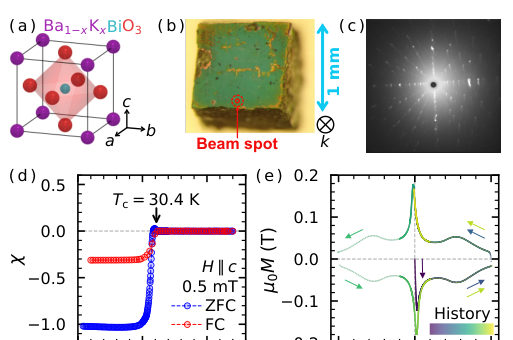
<figcaption class="paper-figure-caption"><b>Fig 1.</b> FIG. 1. (a) Pseudocubic subcell of Ba1–xKxBiO3 derived from the tetragonal I4/mcm structure. The BiO6 octahedron is indicated by the pink faces. The crystal structure was rendered using pyvista and pymatgen packages [37, 38]. (b) Photograph of the Ba0.62K0.38BiO3 single-crystal sample used in this study. The wave vector k of the incident light in the MOKE measurements is perpendicular to this surface, as indicated in the figure. The approximate position of the optical spot in our MOKE study is depicted with red circles. (c) Laue diffraction pattern of the sample, confirming the high quality of the single crystal. The studied surface is confirmed to be the (001) plane in the pseudocubic...</figcaption>
</figure>
<figure class="paper-figure-card">
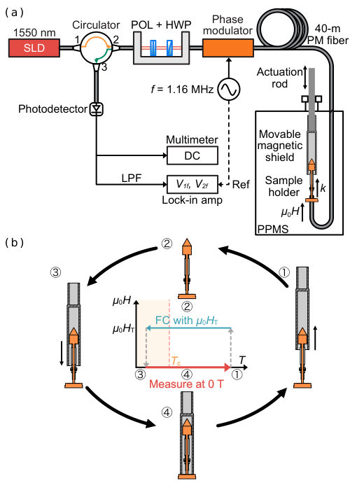
<figcaption class="paper-figure-caption"><b>Fig 2.</b> FIG. 2. (a) Schematic of the polar MOKE measurement setup, where the incident and reflected beams are collinear with the ap- plied magnetic field. The sample is placed inside a commercial 4He cryostat (PPMS). The movable magnetic shield (permalloy) is placed around the sample to suppress remnant fields during the zero-field MOKE measurements. The detailed design of the sample fixture and optical path is described in Ref. [35]. (b) Field-training protocol used in this MOKE study. To investigate the vortex pinning, we employed the following field-training protocol: 1 The shield was moved away from the magnetic-field region to avoid magnetizing the permalloy shield, and the magnetic field was...</figcaption>
</figure>
<figure class="paper-figure-card">
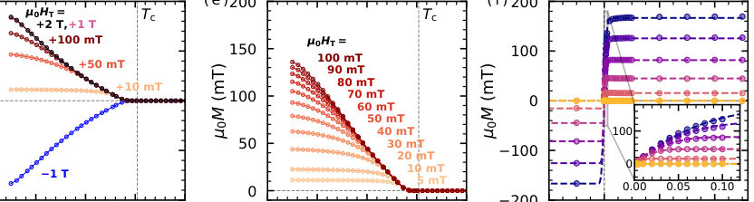
<figcaption class="paper-figure-caption"><b>Fig 3.</b> FIG. 3. (a) Temperature dependence of the Kerr angle change ∆θK during ZFW after FC under various training fields HT. Here, ∆θK(T) is defined as θK(T) −¯θK(T &gt; 35 K). The second term is the averaged Kerr angle in the normal state and is subtracted as a background offset. The broken lines in panels (a) and (b) are guides to the eye that illustrate the saturation behavior, obtained from linear fits to the high-HT data. (b) Detailed training-field dependence of the remanent Kerr angle ∆θK measured with finer steps of HT. (c) Training-field dependence of the Kerr angle change ∆θK at various temperatures. The dashed lines show fits using the local clipped-linear saturation function described by...</figcaption>
</figure>
<figure class="paper-figure-card">
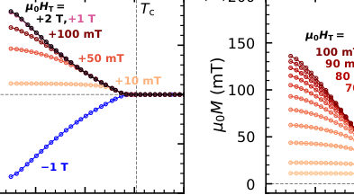
<figcaption class="paper-figure-caption"><b>Fig 4.</b> Figure 4 summarizes the Bean-model interpretation and the fitting procedures used to analyze the remanent response. Figures 4(a) and 4(b) illustrate the basic critical-state picture for the field-training protocol. When the training field satis- fies |HT| ≳Hp, the Bean-like profile after zeroing the ex-</figcaption>
</figure>
<figure class="paper-figure-card">
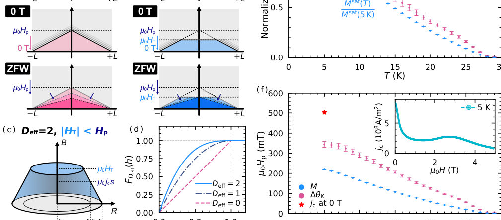
<figcaption class="paper-figure-caption"><b>Fig 5.</b> FIG. 4. (a)(b) Magnetic-flux distribution B(r) arising from vortex pinning, as described by Bean’s critical-state model [2], for the field- training protocol used in this study. Here, Hp denotes the full flux penetration field in the phenomenological Bean-model picture. (a) When the training field satisfies |HT| ≳Hp, the final flux distribution B(r) at zero field is expected to be independent of HT. Upon warming, the reduction of jc leads to a uniform decrease of the slope of the linear B(r) profile. This leads to HT-independent remanent response as a function of temperature. (b) When |HT| &lt; Hp, a region with constant B(r) remains around the center of the sample. As the temperature...</figcaption>
</figure>
</div>

<p><strong>Summary.</strong> This work establishes MOKE as a complementary, highly sensitive optical tool to study vortex pinning in type-II superconductors like $ ext{Ba}<em 0.38>{0.62}  ext{K}</em>_3$. By comparing MOKE signals with bulk magnetization data using the critical-state model, the authors confirm that the observed magnetic history dependence is due to trapped vortices, not exotic superconducting order parameters.}   ext{BiO</p>
<p><strong>Why it may be interesting.</strong> While focused on superconductivity, the rigorous application of universal scaling functions ($F_{	ext{Deff}}(h)$) derived from continuum models (like the critical-state model) provides a powerful template for analyzing mesoscopic responses in other condensed matter systems exhibiting flux trapping or domain wall dynamics.</p>
<details>
<summary>Detailed structure</summary>
<p><strong>Main problem.</strong> The study investigates vortex pinning, a critical mechanism governing irreversible magnetic response and energy dissipation in type-II superconductors.</p>
<p><strong>Main result.</strong> The Magneto-Optical Kerr Effect (MOKE) proves to be a viable optical probe for studying vortex pinning, showing quantitative agreement with bulk magnetization measurements when analyzed via the Bean critical-state model.</p>
<p><strong>Method.</strong> The authors employed ultra-high-resolution MOKE and detailed DC SQUID magnetization measurements on $   ext{Ba}_{1-x}   ext{K}_x    ext{BiO}_3$ single crystals under various field training protocols.</p>
<p><strong>Model / system.</strong> The physical system is the oxide superconductor $   ext{Ba}<em 0.38>{0.62}  ext{K}</em>_3$. The analysis relies heavily on adapting the Bean critical-state model to describe the remanent magnetic flux profile associated with trapped vortices.}   ext{BiO</p>
<p><strong>Key observables.</strong> Zero-field MOKE signal ($\Delta	heta_K$), bulk magnetization ($M$ vs. $H_{	ext{eff}}$), and temperature dependence of susceptibility ($\chi$).</p>
<p><strong>Important parameters / regimes.</strong> Critical current density ($j_c(T)$), penetration field scale ($\mu_0 H_p$), and the training magnetic field magnitude ($|H_T|$).</p>
<p><strong>Assumptions / limitations.</strong> The remanent response is modeled using generalized saturation functions $F_{	ext{Deff}}(h)$, which relate local (MOKE, $ ext{Deff}=0$) and bulk ($  ext{Deff}=2$) measurements to the critical-state model.</p>
<p><strong>Figures summary.</strong> Figures illustrate crystal structure, MOKE setup schematics, temperature dependence of both $M$ and $\Delta	heta_K$, and quantitative comparisons showing how both local and bulk responses follow universal saturation functions derived from the critical-state theory.</p>
<p><strong>Paper structure.</strong> The paper progresses by establishing the physical problem (vortex pinning), detailing the complementary experimental methods (MOKE vs. Magnetization), developing a unified theoretical framework using the Bean model, and finally applying this framework to quantitatively compare local and bulk measurements while ruling out alternative superconducting mechanisms like TRSB.</p>
</details>
<details>
<summary>Abstract</summary>
<p>Vortex pinning plays a crucial role in determining properties of type-II superconductors. For example, it governs the irreversible magnetic response as well as dissipation caused by vortex motion. Here, we study vortex pinning in the three-dimensional oxide superconductor Ba1-xKxBiO3 using ultra-high-resolution magneto-optical Kerr effect (MOKE) and detailed magnetization measurements. We find that the zero-field MOKE signal in the superconducting state exhibits a pronounced magnetic-history dependence. This behavior closely resembles the remanent magnetization caused by trapped vortices. Furthermore, we demonstrate that the observed evolution of the MOKE signals is well described by Bean's critical-state model for trapped vortices. Our results establish MOKE as a viable optical and mesoscopic probe of vortex pinning in type-II superconductors, providing a new complementary approach to investigate mixed-state phenomena. We also find that the training-field dependence of the MOKE is linear near zero training field, without any anomalies indicative of spontaneous time-reversal-symmetry breaking in an unconventional superconducting state. Our study defines a clear protocol to distinguish vortex-induced MOKE responses from those associated with a time-reversal-symmetry broken superconducting order parameter.</p>
</details>
<p><sub><a href="#top">↑ back to top</a></sub></p>

<p><a id="paper-2606.10994"></a></p>
<h3 id="adaptive-identification-of-low-degree-polynomials-in-quantum-singular-value-transformation-application-to-nonlinear-quantum-properties-estimation"><a href="http://arxiv.org/abs/2606.10994v1">Adaptive identification of low-degree polynomials in quantum singular value transformation: application to nonlinear quantum properties estimation</a></h3>
<p><strong>Authors:</strong> Jumpei Kato, Akira Tanji, Hiroyuki Harada, Kaito Wada, Kosuke Ito, Naoki Yamamoto<br>
<strong>Type:</strong> theory · <strong>Category:</strong> quantum information and computing · <strong>PDF:</strong> <a href="https://arxiv.org/pdf/2606.10994v1">https://arxiv.org/pdf/2606.10994v1</a><br>
<strong>Analysis basis:</strong> full PDF text, analyzed in chunks
<strong>Topic relevance:</strong> <code>entanglement &amp; information structure</code> <strong>3/5</strong> · <code>quantum measurements</code> <strong>1/5</strong></p>
<div class="figure-strip-hint">↔ Scroll figures horizontally</div>
<div class="paper-figures-scroll">
<figure class="paper-figure-card">
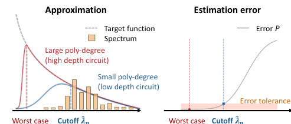
<figcaption class="paper-figure-caption"><b>Fig 1.</b> FIG. 1. The illustration of the idea. (Left) When using a polynomial to approximate a target function that is singu- lar at the origin, the conventional approach truncates the polynomial degree based on a worst-case threshold below the minimum eigenvalue of the state. (Right) Our proposed al- gorithm adaptively identifies the cutoff ˆλη with reference to the estimation error tolerance η of the target nonlinear prop- erty, while the conventional one takes a property-independent worst-case threshold. The cutoff ˆλη yields a sufficiently low- degree polynomial in the left figure.</figcaption>
</figure>
<figure class="paper-figure-card">
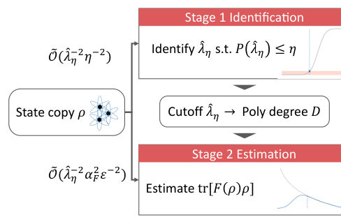
<figcaption class="paper-figure-caption"><b>Fig 2.</b> FIG. 2. The overall pipeline of the two-stage algorithm.</figcaption>
</figure>
<figure class="paper-figure-card">
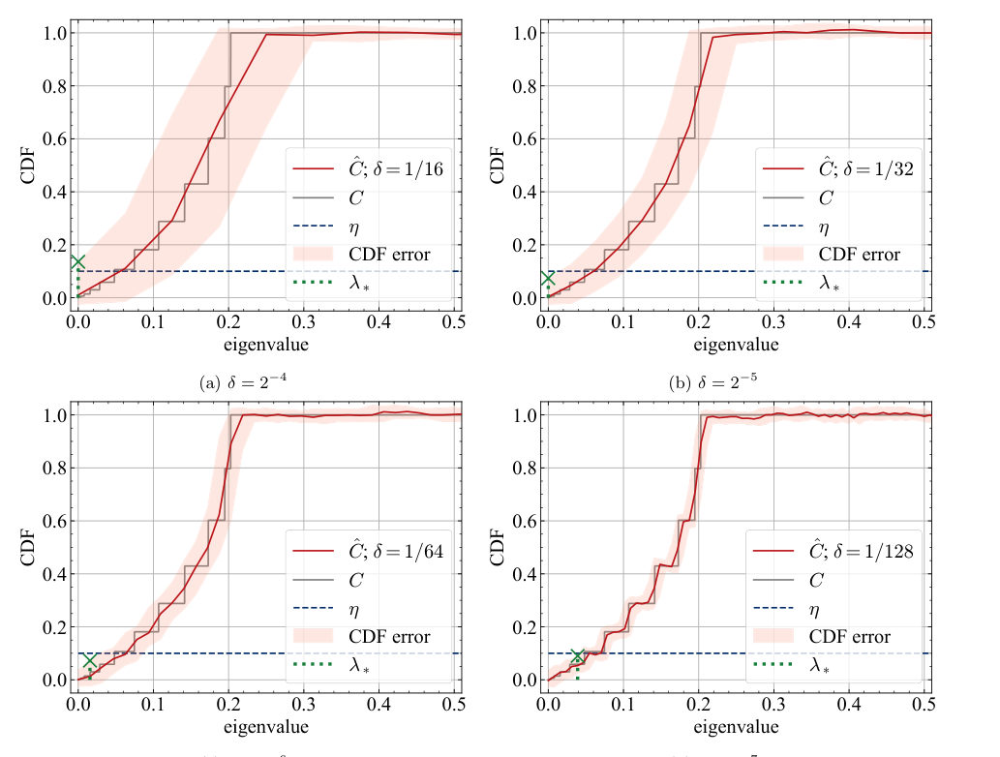
<figcaption class="paper-figure-caption"><b>Fig 3.</b> FIG. 3. The algorithm search steps to find λη = 0.048. The flow progresses from (a) to (d) with gradually decreasing δ. ˆC shows the estimated CDF in red, and C shows the exact CDF in gray. λ∗identified by the algorithm is displayed in green. The red shaded areas display the CDF approximation error bound implied by Eq. (17). (a, b) There are no grid points satisfying Eq. (19), and λ∗= 0 is returned. (c) A non-zero λ∗is found, but the algorithm continues since λ∗&lt; 2δl. (d) λ∗≥2δ is found, and the algorithm stops with the return ˆλη = 1.7 × 10−2.</figcaption>
</figure>
</div>

<p><strong>Summary.</strong> The paper introduces an adaptive two-stage algorithm to estimate complex quantum properties like entropy by leveraging Quantum Singular Value Transformation (QSVT). Instead of relying on overly conservative worst-case bounds derived from state rank or minimum eigenvalues, the method first identifies a spectral cutoff $\hat{\lambda}_{\eta}$ specific to the required accuracy. This allows for using much lower-degree polynomials, drastically reducing the necessary number of quantum state copies required for accurate estimation.</p>
<p><strong>Why it may be interesting.</strong> This work provides a significant algorithmic improvement for resource estimation in quantum information theory, directly addressing the computational bottleneck associated with high-degree polynomial approximations required for entropy estimation.</p>
<details>
<summary>Detailed structure</summary>
<p><strong>Main problem.</strong> The core problem is efficiently estimating nonlinear quantum properties, such as von Neumann or Rényi entropy, of an unknown quantum state $\rho$ using the Quantum Singular Value Transformation (QSVT).</p>
<p><strong>Main result.</strong> The authors propose a two-stage spectral cutoff method that allows for the use of significantly lower-degree polynomials compared to traditional worst-case bounds based on minimum eigenvalues or rank.</p>
<p><strong>Method.</strong> They develop an adaptive algorithm where Stage 1 identifies a certified spectral cutoff $\hat{\lambda}_{\eta}$ from the state's spectrum, and Stage 2 uses this cutoff to determine the polynomial degree for QSVT estimation.</p>
<p><strong>Model / system.</strong> The system involves estimating properties of an unknown quantum state $\rho$ (represented by a density matrix) in the sample-access model. The techniques are applied generally to various nonlinear functions $f(\rho)$ that define the target entropy or moment.</p>
<p><strong>Key observables.</strong> Von Neumann entropy ($S(\rho)$), Rényi entropy ($R_\alpha(\rho)$), and general nonlinear properties $\text{tr}[f(\rho)\rho]$.</p>
<p><strong>Important parameters / regimes.</strong> Target accuracy ($\eta$, $\epsilon$), failure probability ($\vartheta$), spectral cutoff ($\hat{\lambda}_{\eta}$), and the polynomial degree ($D$).</p>
<p><strong>Assumptions / limitations.</strong> The method assumes that identifying a certified spectral cutoff $\hat{\lambda}_{\eta}$ is feasible, which bypasses reliance on knowing the minimum non-zero eigenvalue or rank.</p>
<p><strong>Figures summary.</strong> Figures illustrate the comparison between conventional truncation methods (requiring high polynomial degrees) and the proposed adaptive algorithm using the identified spectral cutoff $\hat{\lambda}_{\eta}$.</p>
<p><strong>Paper structure.</strong> The paper follows a two-stage algorithmic structure: first, an iterative search process (Algorithm 1) to identify the certified spectral cutoff $\hat{\lambda}_{\eta}$ based on error tolerances; second, applying QSVT with a degree determined by this cutoff to estimate the desired quantum property.</p>
</details>
<details>
<summary>Abstract</summary>
<p>Estimating properties of unknown quantum states via quantum singular value transformation (QSVT) often requires high-degree polynomials to handle small eigenvalues of density matrices. Specifically, the existing approaches determine the polynomial degree by relying on overly conservative worst-case bounds based on the minimum non-zero eigenvalue or the rank of the density matrices. In this work, we propose a spectral cutoff method that truncates the negligible eigenvalue tail depending on the task, the target accuracy, and the state, which enables the use of significantly lower-degree polynomials. To implement this, we develop a two-stage algorithm to estimate nonlinear properties, particularly von Neumann entropy and R{é}nyi entropy. In the first stage, we execute a search algorithm to identify the spectral cutoff directly from the unknown quantum state. In the second stage, we estimate the nonlinear properties utilizing QSVT with the degree of polynomial adaptively determined by the cutoff. This two-stage algorithm significantly improves the overall estimation cost compared to known bounds, even without knowing the minimum eigenvalue or the rank.</p>
</details>
<p><sub><a href="#top">↑ back to top</a></sub></p>

<p><a id="paper-2606.10821"></a></p>
<h3 id="continuous-and-discontinuous-transitions-in-the-ising-heisenberg-model-on-the-extended-lieb-lattice-in-a-magnetic-field"><a href="http://arxiv.org/abs/2606.10821v1">Continuous and discontinuous transitions in the Ising-Heisenberg model on the extended Lieb lattice in a magnetic field</a></h3>
<p><strong>Authors:</strong> David Sivy, Jozef Strecka<br>
<strong>Type:</strong> theory · <strong>Category:</strong> statistical mechanics · <strong>PDF:</strong> <a href="https://arxiv.org/pdf/2606.10821v1">https://arxiv.org/pdf/2606.10821v1</a><br>
<strong>Analysis basis:</strong> full PDF text, analyzed in chunks
<strong>Topic relevance:</strong> <code>analog quantum simulation</code> <strong>3/5</strong> · <code>exotic spin models in light-matter</code> <strong>1/5</strong></p>
<div class="figure-strip-hint">↔ Scroll figures horizontally</div>
<div class="paper-figures-scroll">
<figure class="paper-figure-card">
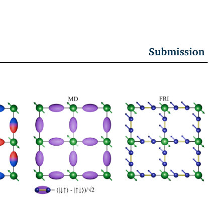
<figcaption class="paper-figure-caption"><b>Fig 1.</b> Figure 2: Ground-state phase diagram of the spin-1/2 Ising-Heisenberg model on the extended Lieb lattice in the J1/J–h/J plane together with schematic illustrations of the quantum antiferromagnetic (QAF), the quantum monomer-dimer (MD), and the classical ferrimagnetic (FRI) phases. Arrows indicate the spin orientation. FM denotes the fully saturated ferromagnetic phase. A violet oval represents a singlet- dimer state, whereas a double-colored oval indicates a singlet-dimer-like state.</figcaption>
</figure>
<figure class="paper-figure-card">
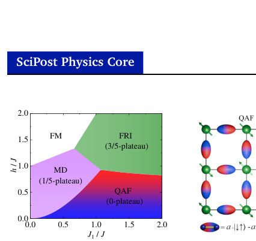
<figcaption class="paper-figure-caption"><b>Fig 2.</b> Fig. 2 displays the overall ground-state phase diagram in the J1/J–h/J plane, which comprises four distinct ground states (18)–(21) separated by discontinuous zero-temperature phase tran- sitions determined by the conditions (22) together with schematic illustrations of the QAF, MD, and FRI phases. The most remarkable spin arrangement occurs in the QAF phase (18), where the Heisenberg spin pairs form dimer-singlet-like state (double-colored ovals) further mediat- ing an effective antiferromagnetic interaction between the Ising spins displaying perfect Néel</figcaption>
</figure>
<figure class="paper-figure-card">
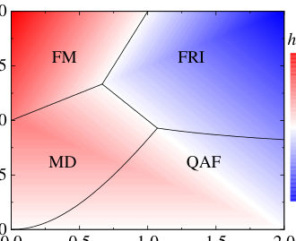
<figcaption class="paper-figure-caption"><b>Fig 3.</b> Figure 3: Density plots of zero-temperature asymptotic values of the effective inter- action Jeff (a) and the effective field heff (b) of the spin-1/2 Ising-Heisenberg model on the extended Lieb lattice in the J1/J–h/J plane.</figcaption>
</figure>
<figure class="paper-figure-card">
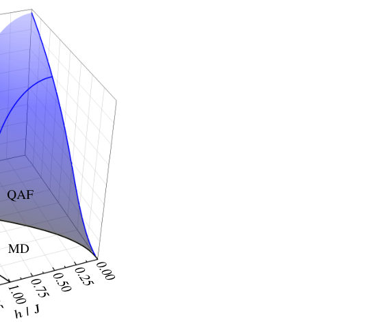
<figcaption class="paper-figure-caption"><b>Fig 4.</b> Figure 4: Global phase diagram of the spin-1/2 Ising-Heisenberg extended Lieb lat- tice in the J1/J-h/J-kBT/J parameter space. The blue lines correspond to continuous phase transitions occurring at zero effective field heff = 0. The red surface represents discontinuous thermal phase transitions extending from the ground-state boundary between the MD and FRI phases and terminating at the line of continuous phase transitions. The blue surface corresponds to continuous thermal phase transitions extending from the QAF-MD and QAF-FRI ground-state phase boundaries, whereby the two surfaces continuously merge into one another at zero effective field heff = 0 as indicated by the blue solid line.</figcaption>
</figure>
<figure class="paper-figure-card">
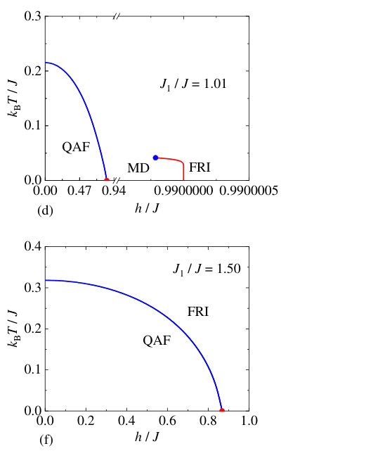
<figcaption class="paper-figure-caption"><b>Fig 5.</b> Figure 5: Finite-temperature phase diagrams of the spin-1/2 Ising-Heisenberg model on the extended Lieb lattice in the h/J–kBT/J plane for a few selected values of the interaction ratio: (a) J1/J = 0.5, (b) J1/J = 0.9, (c) J1/J = 1.0, (d) J1/J = 1.01, (e) J1/J = 1.25, and (f) J1/J = 1.50. Blue curves denote continuous phase transitions between the QAF phase and either MD or FRI phase,whereas red curves represent discontinuous transitions between the MD and FRI phases terminating at the Ising critical point shown as a blue circle. The lines of continuous phase transitions emerge from the zero-temperature discontinuous transition depicted as a red circle. The black square indicates the...</figcaption>
</figure>
</div>

<p><strong>Summary.</strong> This work analyzes phase transitions in the Ising-Heisenberg model on the extended Lieb lattice. By mapping it onto an effective Ising model, the authors map out a complex phase diagram showing both continuous critical lines and dome-shaped regions of discontinuous thermal transitions. The results are strongly confirmed by Monte Carlo simulations, providing a detailed understanding of magnetic ordering under external fields.</p>
<p><strong>Why it may be interesting.</strong> The detailed characterization of both continuous (critical) and first-order (discontinuous) transitions in a frustrated quantum spin system provides rich insights into the interplay between quantum fluctuations and classical ordering mechanisms relevant to many condensed matter systems.</p>
<details>
<summary>Detailed structure</summary>
<p><strong>Main problem.</strong> The study investigates the nature (continuous vs. discontinuous) and location of thermal phase transitions within the spin-1/2 Ising-Heisenberg model.</p>
<p><strong>Main result.</strong> The phase diagram reveals distinct regions characterized by four ground states (QAF, MD, FRI, FM), featuring both dome-shaped surfaces of discontinuous transitions and continuous transition lines.</p>
<p><strong>Method.</strong> The authors employ an exact mapping technique using the Decoration-Iteration Transformation to reduce the model to an effective Ising model, supplemented by Monte Carlo simulations for verification.</p>
<p><strong>Model / system.</strong> The system is a spin-1/2 Ising-Heisenberg model defined on the extended Lieb lattice subjected to an external magnetic field. The Hamiltonian involves couplings ($J_1, J$) and the field ($h$).</p>
<p><strong>Key observables.</strong> Ground-state phase diagram, finite-temperature phase transitions (continuous vs. discontinuous), magnetization ($\langle m_I 
angle, \langle m_H 
angle$), and magnetic susceptibility ($\chi$).</p>
<p><strong>Important parameters / regimes.</strong> Interaction ratios ($J_1/J$), external field strength ($h/J$), and temperature ($k_B T/J$).</p>
<p><strong>Assumptions / limitations.</strong> The analysis relies on an exact mapping of the complex model onto an effective Ising model, which is rigorously tested against Monte Carlo results.</p>
<p><strong>Figures summary.</strong> Figures illustrate global phase diagrams in 3D parameter space ($J_1/J - h/J - k_B T/J$), showing distinct surfaces for continuous (blue) and discontinuous (red) transitions. Isothermal magnetization curves confirm plateaus associated with different phases.</p>
<p><strong>Paper structure.</strong> The paper progresses from defining the complex Hamiltonian on the Lieb lattice, deriving an effective Ising model via transformation techniques, mapping out zero-temperature ground states, and finally constructing global phase diagrams showing both continuous and discontinuous thermal transition surfaces.</p>
</details>
<details>
<summary>Abstract</summary>
<p>The spin-1/2 Ising-Heisenberg model on the extended Lieb lattice in a magnetic field is exactly mapped onto an effective spin-1/2 Ising model on the square lattice. The ground-state phase diagram comprises the quantum antiferromagnetic (QAF), quantum monomer-dimer (MD), classical ferrimagnetic (FRI), and classical ferromagnetic phase. The MD-FRI ground-state phase boundary extends to finite temperatures as a dome-shaped surface of discontinuous thermal transitions bounded by a line of Ising critical points. The QAF phase is enclosed by a surface of continuous thermal transitions evolving from the QAF-MD and QAF-FRI ground-state phase boundaries. Monte Carlo simulations fully confirm the existence and nature of both continuous and discontinuous thermal phase transitions obtained by exact and approximate analytical calculations.</p>
</details>
<p><sub><a href="#top">↑ back to top</a></sub></p>

<p><a id="paper-2606.10379"></a></p>
<h3 id="nonreciprocal-photon-bundle-emission"><a href="http://arxiv.org/abs/2606.10379v1">Nonreciprocal photon bundle emission</a></h3>
<p><strong>Authors:</strong> Baijun Li, Jing-Xue Liu, Tian-Xiang Lu, Le-Man Kuang, Chaohong Lee, Hui Jing<br>
<strong>Type:</strong> theory · <strong>Category:</strong> other · <strong>PDF:</strong> <a href="https://arxiv.org/pdf/2606.10379v1">https://arxiv.org/pdf/2606.10379v1</a><br>
<strong>Analysis basis:</strong> full PDF text, analyzed in chunks
<strong>Topic relevance:</strong> <code>Tavis-Cummings &amp; cavity-many-emitter</code> <strong>2/5</strong> · <code>correlated cavity matter</code> <strong>2/5</strong> · <code>Keldysh / 2PI / non-Gaussian methods</code> <strong>1/5</strong> · <code>analog quantum simulation</code> <strong>1/5</strong> · <code>correlated / nonlocal dissipation</code> <strong>1/5</strong> · <code>driven-dissipative phase transition</code> <strong>1/5</strong> · <code>interference shaping light</code> <strong>1/5</strong> · <code>methods for driven-dissipative</code> <strong>1/5</strong> · <code>superradiant laser</code> <strong>1/5</strong></p>
<div class="figure-strip-hint">↔ Scroll figures horizontally</div>
<div class="paper-figures-scroll">
<figure class="paper-figure-card">
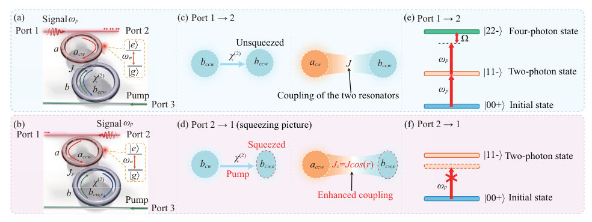
<figcaption class="paper-figure-caption"><b>Fig 1.</b> FIG. 1. Schematic of nonreciprocal two-photon bundle emission via directional quantum squeezing. (a,b) Compound system comprises two coupled whispering-gallery mode microcavities and a two-level atom, where a weak probe field is input from port 1 or from port 2. (c,d) Cavity b, containing χ(2) nonlinearity, is driven by a strong coherent laser from port 3, generating the directed quantum squeezing. A strong pump field also is applied to the two-level atom. The directed squeezing leads to an asymmetric detuning and photon hopping interaction in the system. The physical origin of the nonreciprocal two-photon bundle emission. (e) When the probe field is input from the left side, the super-Rabi...</figcaption>
</figure>
<figure class="paper-figure-card">
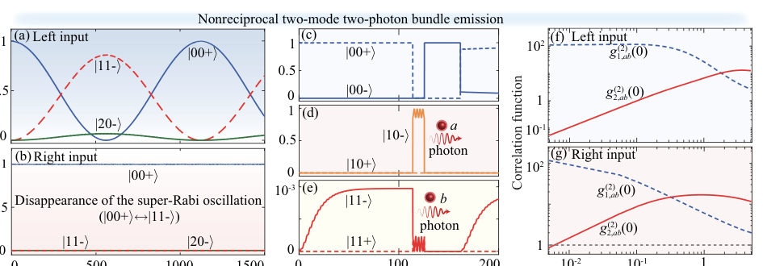
<figcaption class="paper-figure-caption"><b>Fig 2.</b> FIG. 2. Nonreciprocal two-photon bundle emission with the photons emitted from different cavities. (a,b) Nonreciprocal super- Rabi oscillation between the states |00+⟩and |11−⟩. Figures (a) and (b) depict the populations of the states |00+⟩, |11−⟩, and |20−⟩as a function of scaled evolution time ξt, when the probe field is input from the left side and the right side, respectively. (c-e) Quantum trajectory of the populations of the states |nm±⟩(n, m = 0, 1) for the probe field input from left side. (f,g) The cross second-order correlation function g(2) 1,ab(0) and the generalized cross second-order correlation function g(2) 2,ab(0) as functions of the atom decay rate γ/ξ. The parameters are...</figcaption>
</figure>
<figure class="paper-figure-card">
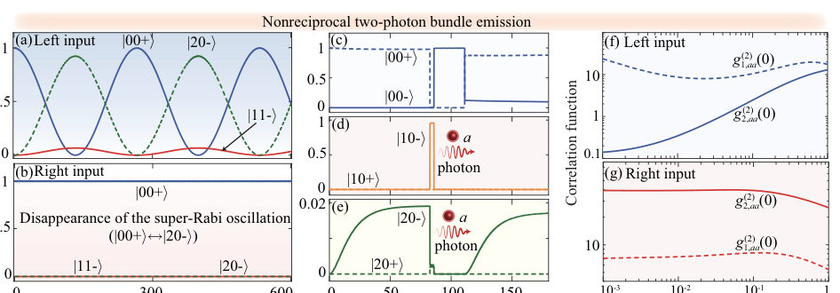
<figcaption class="paper-figure-caption"><b>Fig 3.</b> FIG. 3. Nonreciprocal two-photon bundle emission with photons emitted from cavity a. (a,b) Nonreciprocal super-Rabi oscillations between states |00+⟩and |20−⟩. Populations of the states |00+⟩, |11−⟩, and |20−⟩as functions of the scaled evolution time ξt for the probe field input from the left side (a) or the right side (b). (c-e) Quantum trajectory of populations of the states |nm±⟩(n, m = 0, 1, 2) for the probe field input from left side. Second-order correlation function g(2) 1,aa(0) and</figcaption>
</figure>
</div>

<p><strong>Summary.</strong> The paper explores generating directional two-photon photon bundles using a coupled resonator system driven by quantum squeezing. By analyzing the system's dynamics under different input directions, the authors demonstrate that squeezing breaks symmetry, enabling emission only from one direction. This offers an all-optical method to control chiral quantum light sources.</p>
<p><strong>Why it may be interesting.</strong> This work is highly relevant as it combines quantum squeezing (a key tool in AMO) with nonreciprocal effects and multiquanta light generation, providing an all-optical control mechanism for quantum sources.</p>
<details>
<summary>Detailed structure</summary>
<p><strong>Main problem.</strong> The study investigates nonreciprocal photon bundle emission, a phenomenon controlled by directional quantum squeezing.</p>
<p><strong>Main result.</strong> Directional quantum squeezing selectively induces two-photon bundle emission when the probe field enters from one direction while prohibiting it from the opposite direction.</p>
<p><strong>Method.</strong> The dynamics are analyzed using Hamiltonian derivations and master equations, supplemented by Bogoliubov transformations and correlation function calculations.</p>
<p><strong>Model / system.</strong> The system is a compound setup involving two coupled optical resonators (microcavities) and a two-level atom within the context of quantum optics. The interaction is modeled via an effective Hamiltonian incorporating squeezing parameters.</p>
<p><strong>Key observables.</strong> Two-photon super-Rabi oscillation, second-order correlation functions ($g^{(2)}$), and photon populations in specific quantum states.</p>
<p><strong>Important parameters / regimes.</strong> Squeezing parameter (r), detuning ($\Delta$), cavity decay rates ($\kappa$), and atomic decay rate ($\gamma$).</p>
<p><strong>Assumptions / limitations.</strong> The rotating-wave approximation is used, and thermal effects are neglected due to high resonance frequencies.</p>
<p><strong>Figures summary.</strong> Figures schematically show the setup with input ports (Port 1/2) and pumping mechanisms. They illustrate super-Rabi oscillations via population dynamics and confirm nonreciprocity using $g^{(2)}$ correlation functions for different input directions.</p>
<p><strong>Paper structure.</strong> The paper establishes the physical model, derives Hamiltonians for left/right inputs, analyzes the resulting super-Rabi oscillations under dissipation, and finally uses correlation functions to quantify the directional asymmetry of the photon bundle emission.</p>
</details>
<details>
<summary>Abstract</summary>
<p>Quantum squeezing, a cornerstone of quantum optics and photonics, has played a key role in achieving ultra-precision sensing and realizing nonreciprocal engineering. However, the nonreciprocal multiquanta emission has remained largely unexplored by using directional quantum squeezing. Here, the one-way photon-photon bundle emission in a compound system consisted of two coupled optical resonators and a two-level atom is investigated. It is found that the directional quantum squeezing induces the asymmetric frequency detuning and photon hopping interaction between the two resonators, leading to the directional excitation of the two-photon super-Rabi oscillation. In particular, by harnessing intrinsic dissipation of the system, two types of two-photon bundle emission can be selectively induced for the probe field input from one direction while it is prohibited with the probe from the other direction. This finding bridges the broad fields ranging from nonreciprocal physics to quantum squeezing optics and multiquanta emission control through an all-optical approach, which can enable potential applications in chiral quantum emitters and backscattering-immune photonic communications.</p>
</details>
<p><sub><a href="#top">↑ back to top</a></sub></p>

<p><a id="paper-2606.10680"></a></p>
<h3 id="hawking-page-universality-thermodynamic-dipoles-and-categorical-defects"><a href="http://arxiv.org/abs/2606.10680v1">Hawking--Page Universality, Thermodynamic Dipoles and Categorical Defects</a></h3>
<p><strong>Authors:</strong> Emilio Torrente-Lujan<br>
<strong>Type:</strong> theory · <strong>Category:</strong> statistical mechanics · <strong>PDF:</strong> <a href="https://arxiv.org/pdf/2606.10680v1">https://arxiv.org/pdf/2606.10680v1</a><br>
<strong>Analysis basis:</strong> full PDF text, analyzed in chunks
<strong>Topic relevance:</strong> <code>non-equilibrium universality</code> <strong>2/5</strong> · <code>Keldysh / 2PI / non-Gaussian methods</code> <strong>1/5</strong> · <code>analog quantum simulation</code> <strong>1/5</strong> · <code>correlated / nonlocal dissipation</code> <strong>1/5</strong> · <code>driven-dissipative phase transition</code> <strong>1/5</strong> · <code>entanglement &amp; information structure</code> <strong>1/5</strong> · <code>methods for driven-dissipative</code> <strong>1/5</strong> · <code>non-equilibrium dynamics</code> <strong>1/5</strong></p>
<div class="figure-strip-hint">↔ Scroll figures horizontally</div>
<div class="paper-figures-scroll">
<figure class="paper-figure-card">
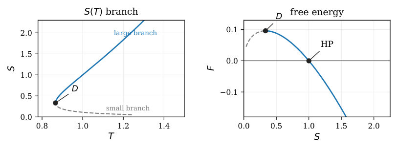
<figcaption class="paper-figure-caption"><b>Fig 1.</b> Figure 1. Reduced Schwarzschild–AdS phase schematic portrait (adapted from [12]). Left: the Davies point D is the minimum of T(S) and separates the small and large branches. Right: the same point is the maximum of F(S), while HP is the zero of F on the stable large-black-hole branch. Dashed portions denote locally unstable states.</figcaption>
</figure>
<figure class="paper-figure-card">
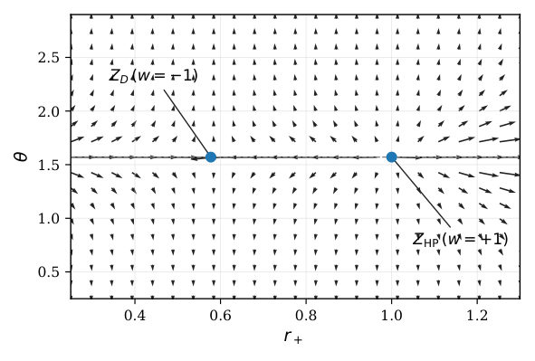
<figcaption class="paper-figure-caption"><b>Fig 2.</b> Figure 2. Normalized common vector field for Schwarzschild–AdS in the (r+, θ) plane. The zero at r+ = 1/ √</figcaption>
</figure>
<figure class="paper-figure-card">
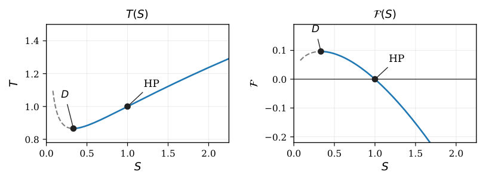
<figcaption class="paper-figure-caption"><b>Fig 3.</b> Figure 3. Four-dimensional Schwarzschild–AdS branch plotted as T(S) and F(S). The oriented separation from D to HP gives the two dipole components, PS = SHP −SD and PT = THP −TD.</figcaption>
</figure>
<figure class="paper-figure-card">
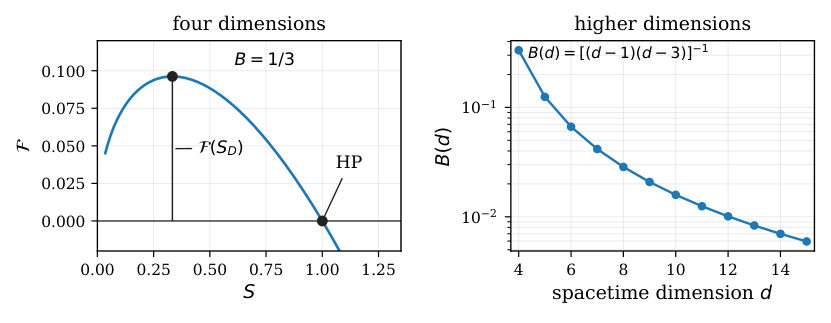
<figcaption class="paper-figure-caption"><b>Fig 4.</b> Figure 5. Normalized Hawking–Page barrier. In four dimensions the Davies point is the top of the free-energy barrier, giving B = F(SD)/(TDSD) = 1/3. In the charged non-rotating family the higher-dimensional result is B(d) = 1/[(d −1)(d −3)].</figcaption>
</figure>
<figure class="paper-figure-card">
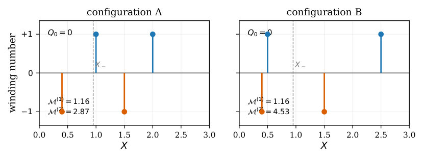
<figcaption class="paper-figure-caption"><b>Fig 5.</b> Figure 6. Toy defect configurations illustrating the need for higher moments. The two panels have the same total winding number and the same normalized first moment, but their second moments differ. The dashed line marks the negative-charge centroid X−.</figcaption>
</figure>
</div>

<p><strong>Summary.</strong> This work unifies the understanding of black hole phase transitions (Hawking–Page and Davies) by mapping them onto a topological dipole structure defined by winding numbers. The authors derive universal constants for these ratios across various dimensions and geometries. They further advance this framework by incorporating categorical defects, suggesting a deeper connection between gravity's thermodynamics and abstract algebraic structures.</p>
<p><strong>Why it may be interesting.</strong> While primarily in gravity/QFT, the rigorous application of topological invariants (winding numbers) to characterize phase transitions and universal ratios echoes methods used in analyzing critical points in condensed matter systems, particularly those involving symmetry breaking or emergent order parameters.</p>
<details>
<summary>Detailed structure</summary>
<p><strong>Main problem.</strong> The paper reconsiders the Hawking–Page phase transition by analyzing a common thermodynamic vector field whose zeros include both Davies and Hawking–Page critical points.</p>
<p><strong>Main result.</strong> It establishes that these transitions can be characterized by universal ratios ($C_S, C_T$) derived from topological charges (winding numbers) associated with the dipole structure of the free energy landscape. Furthermore, it extends this analysis to incorporate categorical defects.</p>
<p><strong>Method.</strong> The authors use a thermodynamic vector field approach to calculate winding numbers and signed first moments at critical points on black hole phase diagrams. They then normalize these moments to derive universal ratios independent of specific scaling parameters.</p>
<p><strong>Model / system.</strong> The study focuses on the thermodynamics of Anti-de Sitter (AdS) black holes, including Schwarzschild–AdS, Reissner–Nordström–AdS, and Kerr–AdS geometries in arbitrary dimensions. The analysis is performed using the on-shell free energy $F(S; Y_i)$.</p>
<p><strong>Key observables.</strong> Universal ratios ($C_S, C_T$), topological charges (winding numbers $w_D=-1, w_{HP}=+1$), and the dimensionless barrier constant $B$.</p>
<p><strong>Important parameters / regimes.</strong> Dimensionality ($d$), angular velocity ($\Omega$), and defect parameters associated with non-invertible symmetries.</p>
<p><strong>Assumptions / limitations.</strong> The analysis assumes that universal ratios can be extracted by normalizing thermodynamic quantities based on a shared functional form (shape argument). Extensions involve assuming control over both black hole saddles and defect sectors for full analytic treatment.</p>
<p><strong>Figures summary.</strong> Figures schematically illustrate the phase diagrams, showing the locations of the Davies (D) and Hawking–Page (HP) points, and demonstrate how higher moments can distinguish between different configurations sharing the same total charge and first moment.</p>
<p><strong>Paper structure.</strong> The paper progresses by defining the common thermodynamic vector field, calculating topological charges for simple AdS black holes to find universal ratios ($C_S, C_T$), generalizing these findings to arbitrary dimensions and rotation (Kerr-AdS), and finally proposing an extension using defect-resolved free energies within a categorical framework.</p>
</details>
<details>
<summary>Abstract</summary>
<p>We reconsider the Hawking--Page transition using the common thermodynamic vector field whose zeros include the Davies and Hawking--Page points. In the elementary AdS branch their winding numbers are $w_{\rm D}=-1$ and $w_{\rm HP}=+1$, so the pair has zero total charge but a non-zero signed first moment. After normalization by the Davies scales this moment gives the familiar universal ratios $C_S$ and $C_T$; in four dimensions $C_S=2$ and $C_T=2/\sqrt{3}-1$. We check the construction for Schwarzschild--AdS, grand-canonical Reissner--Nordström--AdS, charged non-rotating black holes in arbitrary dimension, and Kerr--AdS at fixed angular velocity. The same reduced geometry gives a barrier $B=1/3$ in four dimensions and $B(d)=1/[(d-1)(d-3)]$. Finally we propose a formulation involving a defect-resolved version for categorical or non-invertible symmetry sectors.</p>
</details>
<p><sub><a href="#top">↑ back to top</a></sub></p>

<p><a id="paper-2606.10324"></a></p>
<h3 id="rank-collapse-fixed-points-and-the-renormalization-group-structure-of-mlp-residual-networks"><a href="http://arxiv.org/abs/2606.10324v1">Rank Collapse, Fixed Points, and the Renormalization Group Structure of MLP Residual Networks</a></h3>
<p><strong>Authors:</strong> Parviz Haggi-Mani, Irina Rish<br>
<strong>Type:</strong> experiment · <strong>Category:</strong> statistical mechanics · <strong>PDF:</strong> <a href="https://arxiv.org/pdf/2606.10324v1">https://arxiv.org/pdf/2606.10324v1</a><br>
<strong>Analysis basis:</strong> full PDF text, analyzed in chunks
<strong>Topic relevance:</strong> <code>non-equilibrium universality</code> <strong>2/5</strong> · <code>Keldysh / 2PI / non-Gaussian methods</code> <strong>1/5</strong> · <code>analog quantum simulation</code> <strong>1/5</strong> · <code>correlated / nonlocal dissipation</code> <strong>1/5</strong> · <code>driven-dissipative phase transition</code> <strong>1/5</strong> · <code>entanglement &amp; information structure</code> <strong>1/5</strong> · <code>methods for driven-dissipative</code> <strong>1/5</strong> · <code>non-equilibrium dynamics</code> <strong>1/5</strong></p>
<div class="figure-strip-hint">↔ Scroll figures horizontally</div>
<div class="paper-figures-scroll">
<figure class="paper-figure-card">
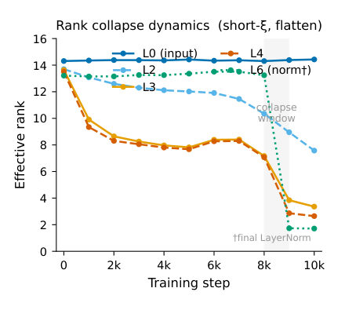
<figcaption class="paper-figure-caption"><b>Fig 1.</b> Figure 2: Effective rank at selected layers as a function of training step, short-ξ chain (flat- ten mode). L0 (control) remains flat through- out. L3 and L4 are stable until the shaded collapse window (steps 8,000–9,000), where they drop abruptly. The sharpness of the transition is inconsistent with a smooth RG cascade and suggests a phase-transition-like reorganisation during late training.</figcaption>
</figure>
<figure class="paper-figure-card">
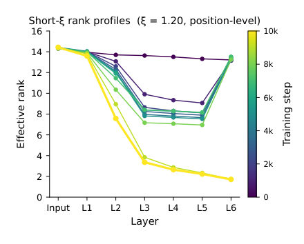
<figcaption class="paper-figure-caption"><b>Fig 2.</b> Figure 1: Effective rank profiles across depth for the short-ξ chain (ξ = 1.2, flatten mode), at 11 training checkpoints from initialization (dark) to step 10,000 (light). Rank is near- uniform at initialization and collapses mono- tonically with depth after training, with a sharp fan visible between steps 8,000–9,000 at layers L3–L6.</figcaption>
</figure>
<figure class="paper-figure-card">
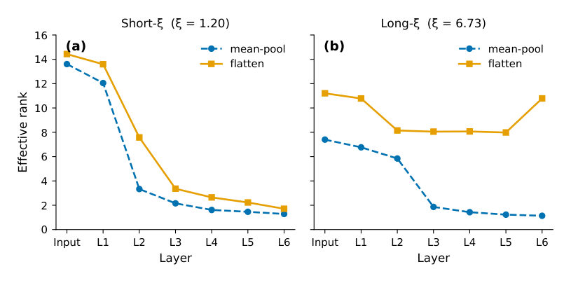
<figcaption class="paper-figure-caption"><b>Fig 3.</b> Figure 3: Effective rank at the final checkpoint under pool (dashed) and flatten (solid) measurement modes. (a) Short-ξ: the two modes nearly coincide; the confound is small. (b) Long-ξ: pool mode shows apparent collapse to rank ≈1; flatten mode shows no collapse (rank ≈8–11). The discrepancy in panel (b) is a mean-pooling artifact arising from the low token diversity of slow-mixing sequences.</figcaption>
</figure>
<figure class="paper-figure-card">
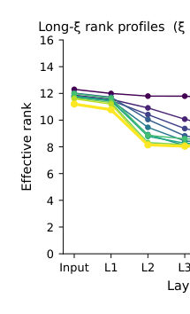
<figcaption class="paper-figure-caption"><b>Fig 4.</b> Figure 4: Effective rank profiles across depth for the long-ξ chain (ξ ≈6.7, flatten mode) at 10 training checkpoints. Unlike the short-ξ chain(Figure 1), the effective rank remains stable across all layers, confirming that no rank collapse occurs when the input distribution contains long-range correlations.</figcaption>
</figure>
<figure class="paper-figure-card">
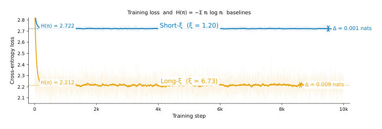
<figcaption class="paper-figure-caption"><b>Fig 5.</b> Figure 5: Training loss curves for the short-ξ (blue, ξ = 1.20) and long-ξ (orange, ξ = 6.73) chains over 10,000 steps. Faint texture shows raw per-step loss; solid lines show exponential moving average (EMA-smoothed) loss. Dashed horizontal lines (left) mark H(π) = −P i πi log πi for each chain (H(π) = 2.722 for short-ξ; H(π) = 2.212 for long-ξ) — the lowest loss achievable by a position-wise model with no access to context. Double-headed arrows show the gap ∆between the final smoothed loss and the H(π) floor. The short-ξ model converges to within 0.001 nats of H(π); the long-ξ model ends 0.009 nats above H(π), reflecting the greater distance of its peaked target distribution from the...</figcaption>
</figure>
</div>

<p><strong>Summary.</strong> This work quantitatively tests the analogy between deep neural networks and Renormalization Group theory using MLP residual stacks trained on Markov chains. By measuring effective rank collapse, the authors show that network compression is selective: it occurs only when input correlations are short-ranged. This provides quantitative evidence for a data-driven, spectral coarse-graining mechanism within deep learning architectures.</p>
<p><strong>Why it may be interesting.</strong> The explicit mapping between network dynamics (rank collapse) and physical concepts like RG flow and fixed points provides a novel computational lens through which to view complex many-body or statistical physics phenomena, potentially guiding the design of quantum machine learning models.</p>
<details>
<summary>Detailed structure</summary>
<p><strong>Main problem.</strong> To move beyond qualitative analogies between deep neural network forward passes and Renormalization Group (RG) theory by conducting an empirical study of a tractable architecture.</p>
<p><strong>Main result.</strong> The effective rank collapse is selective: it occurs for short-correlation length inputs but is absent for long-correlation length inputs, providing quantitative evidence that the MLP selectively coarse-grains based on input spectral structure.</p>
<p><strong>Method.</strong> The authors trained a pure MLP residual stack on synthetic Markov chain sequences and measured the effective rank ($
ho_{    ext{eff}}$) and inter-layer kernel drift (CKA) as functions of network depth.</p>
<p><strong>Model / system.</strong> The model is an MLP residual stack trained for masked token prediction. The input data consists of synthetic Markov chains whose spectral properties are controlled by their correlation length ($\xi$).</p>
<p><strong>Key observables.</strong> Effective Rank ($
ho_{    ext{eff}}$), Inter-layer Kernel Drift ($\Delta C_{KA}$)</p>
<p><strong>Important parameters / regimes.</strong> Correlation Length ($\xi$), Network Depth ($L$), Input Distribution (Short-$\xi$ vs. Long-$\xi$)</p>
<p><strong>Assumptions / limitations.</strong> The study assumes that the observed rank collapse corresponds to the physical RG process of eliminating irrelevant degrees of freedom, and that mean-pooling artifacts must be distinguished from true network compression.</p>
<p><strong>Figures summary.</strong> Figures show $
ho_{    ext{eff}}$ profiles demonstrating monotonic decrease (collapse) for short-$\xi$ chains but stability for long-$\xi$ chains. Kernel drift heatmaps illustrate localized high-drift transitions separated by fixed-point plateaus in both regimes.</p>
<p><strong>Paper structure.</strong> The paper establishes the RG analogy, details the MLP/Markov chain setup, presents quantitative measurements of rank collapse and kernel drift across depth, and concludes by interpreting these results as evidence for selective coarse-graining governed by input spectral structure.</p>
</details>
<details>
<summary>Abstract</summary>
<p>The analogy between deep neural network forward passes and renormalization group (RG) flows has been repeatedly noted in the literature, but existing treatments remain qualitative: depth is described as a coarse-graining scale, attention is likened to a partition function, and representations are said to flow toward fixed points. No existing work has defined a measurable RG order parameter, tested it under controlled variation of the input distribution, or made quantitative predictions that are empirically verified. We study the simplest architecture for which the analogy is tractable: a pure MLP residual stack trained on masked token prediction over synthetic Markov chain sequences with known spectral properties. We report three findings. (i) The effective rank of the residual stream decreases monotonically with depth after training, consistent with progressive integration of irrelevant degrees of freedom. (ii) This rank collapse is selective: it occurs for chains with short correlation length approximately 1 but is absent for chains with long correlation length approximately 7, measured at the position level to control for mean-pooling artifacts. The network preserves exactly the degrees of freedom relevant to the prediction task, the content of the RG relevance criterion. (iii) Inter-layer kernel drift is concentrated at one or two specific transitions, with the remainder of the network near a fixed point, consistent with a discrete fixed-point plateau. Together these findings constitute the first quantitative, position-level evidence that MLP residual networks implement a selective coarse-graining procedure governed by the spectral structure of the input distribution.</p>
</details>
<p><sub><a href="#top">↑ back to top</a></sub></p>

<p><a id="paper-2606.09985"></a></p>
<h3 id="bootstrap-cone-of-the-multicritical-deconfined-quantum-critical-point"><a href="http://arxiv.org/abs/2606.09985v1">Bootstrap Cone of the Multicritical Deconfined Quantum Critical Point</a></h3>
<p><strong>Authors:</strong> Zhijin Li, Tinhong Shen<br>
<strong>Type:</strong> theory · <strong>Category:</strong> strongly correlated electrons · <strong>PDF:</strong> <a href="https://arxiv.org/pdf/2606.09985v1">https://arxiv.org/pdf/2606.09985v1</a><br>
<strong>Analysis basis:</strong> full PDF text, analyzed in chunks
<strong>Topic relevance:</strong> <code>analog quantum simulation</code> <strong>2/5</strong> · <code>Keldysh / 2PI / non-Gaussian methods</code> <strong>1/5</strong> · <code>driven-dissipative phase transition</code> <strong>1/5</strong> · <code>entanglement &amp; information structure</code> <strong>1/5</strong> · <code>non-equilibrium universality</code> <strong>1/5</strong></p>
<div class="figure-strip-hint">↔ Scroll figures horizontally</div>
<div class="paper-figures-scroll">
<figure class="paper-figure-card">
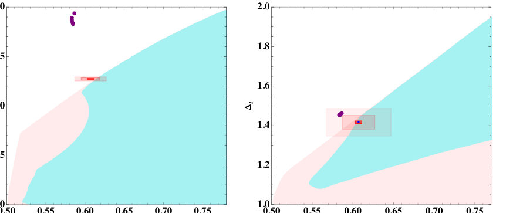
<figcaption class="paper-figure-caption"><b>Fig 1.</b> Figure 1: Bootstrap bounds on the SO(5) singlet scalar s (left) and traceless symmetric scalar t (right). The pink regions denotes the bootstrap allowed regions for general unitary CFTs. The cyan regions are obtained with assumptions ∆s′ &gt; 4.8 (left) and ∆t′ &gt; 3.95 (right). The red rectangles represent the QMC results with 1, 5 and 10σ error bars. The purple dots give the fuzzy sphere results [42] at different system sizes.</figcaption>
</figure>
<figure class="paper-figure-card">
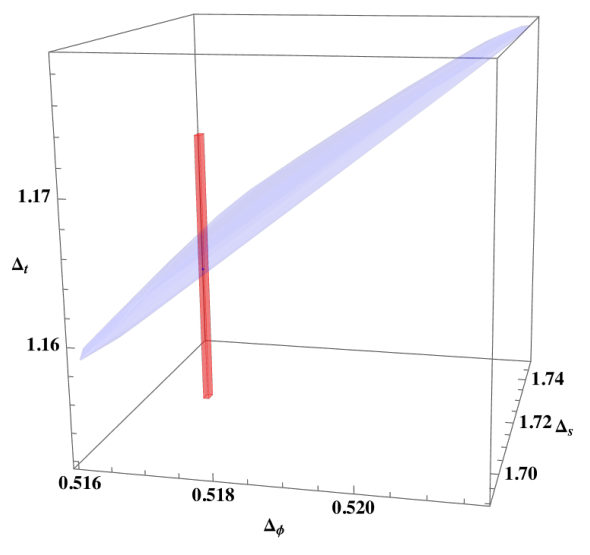
<figcaption class="paper-figure-caption"><b>Fig 2.</b> Figure 2: Bootstrap island for the critical O(5) vector model. The red cuboid represents the MC results [76,77].</figcaption>
</figure>
<figure class="paper-figure-card">

<figcaption class="paper-figure-caption"><b>Fig 3.</b> Figure 3: The cyan (blue) region represents the bootstrap bound for SO(5) CFTs (with assumptions ∆s′,t′ &gt; 3). The two separated red cuboids denote the QMC results for the critical O(5) vector model and DQCP.</figcaption>
</figure>
<figure class="paper-figure-card">
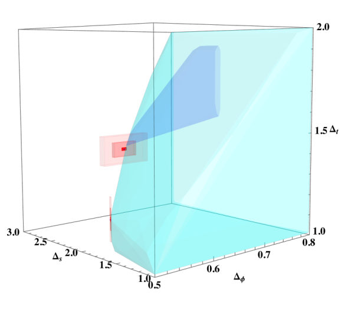
<figcaption class="paper-figure-caption"><b>Fig 4.</b> Figure 3 we present the bootstrap bounds in the three dimensional parameter space for</figcaption>
</figure>
<figure class="paper-figure-card">
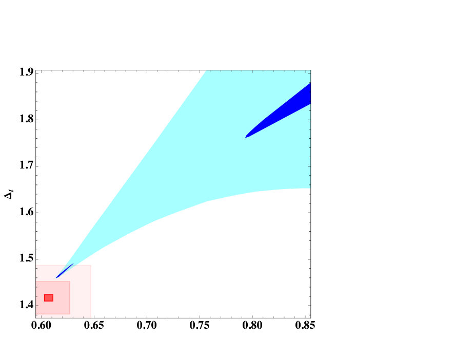
<figcaption class="paper-figure-caption"><b>Fig 5.</b> Figure 4: Bootstrap bounds on the plane with fixed ∆s = 2.273. The cyan (blue) region represents the bound with assumptions ∆s′ &gt; 3, ∆t′ &gt; 3 (∆s′ &gt; 4.5, ∆t′ &gt; 3.95).</figcaption>
</figure>
</div>

<p><strong>Summary.</strong> This work uses conformal bootstrap techniques to analyze the controversial Deconfined Quantum Critical Point (DQCP) in 2D quantum magnets. By showing that the theoretical constraints (bootstrap cone) perfectly match results from both QMC simulations and fuzzy sphere calculations, the authors strongly argue for a unitary multicritical fixed point governed by SO(5) symmetry. This provides a major theoretical breakthrough in understanding unconventional quantum phase transitions.</p>
<p><strong>Why it may be interesting.</strong> Although focused on condensed matter magnetism, the rigorous application of CFT and bootstrap methods provides powerful general tools for analyzing critical points in strongly interacting quantum systems, which has implications for understanding emergent symmetries in other many-body contexts.</p>
<details>
<summary>Detailed structure</summary>
<p><strong>Main problem.</strong> The central problem is determining the true nature of the Deconfined Quantum Critical Point (DQCP) phase transition, specifically resolving the debate between pseudo-criticality and a unitary multicritical fixed point.</p>
<p><strong>Main result.</strong> The authors provide strong evidence supporting the multicriticality scenario by showing that conformal bootstrap bounds consistently unify results from Quantum Monte Carlo simulations and fuzzy sphere calculations into a single unitary CFT description.</p>
<p><strong>Method.</strong> The primary method is applying the Conformal Bootstrap program to constrain the parameters of the critical theory, supplemented by comparison with large-scale QMC data and fuzzy sphere regularization results.</p>
<p><strong>Model / system.</strong> The study focuses on two-dimensional quantum magnets exhibiting transitions between Néel AFM, VBS, and QSL phases. The underlying theoretical framework involves an SO(5) symmetry structure relevant to high-Tc superconductivity.</p>
<p><strong>Key observables.</strong> Critical exponents, scaling dimensions ($\Delta$), Operator Product Expansion (OPE) coefficients, and the shape of the bootstrap cone in parameter space.</p>
<p><strong>Important parameters / regimes.</strong> The existence and location of a unitary fixed point characterized by a relevant SO(5) singlet scalar.</p>
<p><strong>Assumptions / limitations.</strong> The analysis assumes that the critical theory is governed by a unitary Conformal Field Theory (CFT), allowing for the use of bootstrap constraints to overcome limitations in direct numerical simulations.</p>
<p><strong>Figures summary.</strong> Figures illustrate how imposing sparseness conditions causes the general bootstrap bounds to collapse from a strip into a sharp cone, which aligns remarkably well with both QMC data and fuzzy sphere calculations.</p>
<p><strong>Paper structure.</strong> The paper progresses by first establishing the theoretical conflict (pseudo-criticality vs. multicriticality), then applying the conformal bootstrap method using advanced techniques like the navigator algorithm to map out the allowed parameter space, culminating in the demonstration of consistency across multiple independent computational approaches.</p>
</details>
<details>
<summary>Abstract</summary>
<p>The deconfined quantum critical point (DQCP) provides a prominent example of the unconventional phase transitions beyond the Landau-Ginzburg-Wilson paradigm and its nature has been controversial for decades. The DQCP has been extensively studied and the results lead to two opposite scenarios with pseudo-criticality or multicriticality. The pseudo-criticality is a prevailing scenario of DQCP which interprets the approximately scale invariant numerical results with the walking behavior near complex fixed points. In contrast, the multicriticality scenario conjectures the DQCP is a unitary fixed point with a relevant $SO(5)$ singlet scalar. In this work we provide substantial evidence for the multicriticality scenario using conformal bootstrap. We start with the observation that the large scale Quantum Monte Carlo (QMC) results nearly saturate the bootstrap bounds. After imposing suitable sparseness condition the bootstrap bound forms a sharp cone in the three-dimensional parameter space. The bootstrap cone is close to the QMC data. We use the navigator algorithm to locate the apex of the cone and extract the extremal solutions. We find striking consistencies between the bootstrap solutions and the fuzzy sphere data of DQCP, including the coefficients in the operator product expansions (OPEs) and the higher spectrum! The bootstrap cone unifies the QMC and the fuzzy sphere data into a unitary conformal field theory with a relevant $SO(5)$ singlet scalar, thus strongly supporting the multicriticality scenario of DQCP. The agreement between the conformal bootstrap, QMC and fuzzy sphere results is a surprise towards solving DQCP and decoding the profound phase diagram of the two-dimensional quantum magnets.</p>
</details>
<p><sub><a href="#top">↑ back to top</a></sub></p>

<p><a id="paper-2606.11048"></a></p>
<h3 id="colloquium-nuclear-clocks"><a href="http://arxiv.org/abs/2606.11048v1">Colloquium: Nuclear clocks</a></h3>
<p><strong>Authors:</strong> Andrei Derevianko, R. Elwell, Eric R. Hudson<br>
<strong>Type:</strong> both · <strong>Category:</strong> other · <strong>PDF:</strong> <a href="https://arxiv.org/pdf/2606.11048v1">https://arxiv.org/pdf/2606.11048v1</a><br>
<strong>Analysis basis:</strong> full PDF text, analyzed in chunks
<strong>Topic relevance:</strong> <code>QC/QI experiment</code> <strong>2/5</strong> · <code>analog quantum simulation</code> <strong>1/5</strong> · <code>correlated cavity matter</code> <strong>1/5</strong> · <code>driven-dissipative phase transition</code> <strong>1/5</strong> · <code>quantum optics experiment</code> <strong>1/5</strong></p>
<div class="figure-strip-hint">↔ Scroll figures horizontally</div>
<div class="paper-figures-scroll">
<figure class="paper-figure-card">
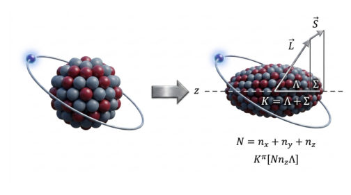
<figcaption class="paper-figure-caption"><b>Fig 1.</b> FIG. 1 Schematic of a deformed nucleus and the Nilsson quantum numbers used for the 229Th ground and isomeric configurations.</figcaption>
</figure>
<figure class="paper-figure-card">
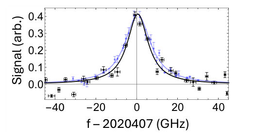
<figcaption class="paper-figure-caption"><b>Fig 2.</b> FIG. 2 (Color online) Nuclear spectroscopy of the 229Th tran- sition in 229Th:LiSrAlF6 and ThO2. Lighter points and curve (blue online) show the radiative-decay spectrum measured in 229Th:LiSrAlF6. The black points show the laser-based conversion-electron M¨ossbauer spectrum of a thin 229ThO2 target. Adapted from (Elwell et al., 2025)</figcaption>
</figure>
<figure class="paper-figure-card">
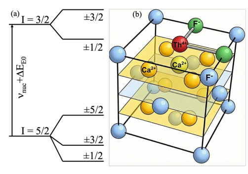
<figcaption class="paper-figure-caption"><b>Fig 3.</b> FIG. 3 (a) The local crystal electric-field gradient splits the I = 5/2 ground-state and I = 3/2 isomeric manifolds into Kramers doublets, labeled by their dominant |I, mI⟩com- ponents. (b) One possible local structure of thorium-doped CaF2. The Th dopant substitutes for Ca2+ as Th4+, while nearby interstitial fluoride ions F– (in green) compensate the excess charge. This microscopic defect complex sets the lo- cal electric-field gradients, the isomer shift, and the electronic defect spectrum of panel (a) sampled by the 229Th nucleus. Adapted from (Dessovic et al., 2014).</figcaption>
</figure>
</div>

<p><strong>Summary.</strong> This review surveys the field of ${}^{229}	ext{Th}$ nuclear clocks, detailing how its unique low-energy isomeric transition makes it a leading candidate for next-generation frequency standards. It compares trapped ion and solid-state implementations, emphasizing that while both offer high precision, controlling environmental decay pathways (quenching) is key to realizing the clock's full potential.</p>
<p><strong>Why it may be interesting.</strong> This work is highly relevant as it bridges nuclear physics with quantum sensing platforms. The study of decay pathways (quenching) in solids involves understanding open quantum systems dynamics, while the comparison between ion traps and crystals touches upon advanced AMO techniques like cavity QED or defect engineering.</p>
<details>
<summary>Detailed structure</summary>
<p><strong>Main problem.</strong> The primary goal is realizing a nuclear optical clock using the low-energy isomeric transition of ${}^{229}	ext{Th}$ to create an ultra-high precision quantum sensor.</p>
<p><strong>Main result.</strong> The paper reviews decades of research, confirming that while significant experimental challenges exist (e.g., distinguishing true decay from background noise), the potential for a high-precision clock in both trapped ions and solid-state matrices is robust.</p>
<p><strong>Method.</strong> The review synthesizes results from various techniques including VUV-comb spectroscopy, laser excitation in crystals, $\gamma$-ray spectroscopy, and ion trapping experiments.</p>
<p><strong>Model / system.</strong> The system centers on the ${}^{229}	ext{Th}$ nuclear isomer ($\sim 8.4 	ext{ eV}$ transition), which is studied in two main platforms: isolated trapped ions (e.g., $   ext{Th}^{3+}$) and solid-state matrices (e.g., fluorides like $ ext{CaF}_2$). The underlying physics involves complex nuclear structure models like the Nilsson model.</p>
<p><strong>Key observables.</strong> Transition energy ($\sim 8.4 	ext{ eV}$), transition multipolarity ($   ext{M}1$), isomer shift, and sensitivity to fundamental constant variations ($K_{\alpha}$).</p>
<p><strong>Important parameters / regimes.</strong> Clock stability targets reaching $10^{-19}$ fractional accuracy; the near-cancellation of strong and electromagnetic contributions leading to high sensitivity.</p>
<p><strong>Assumptions / limitations.</strong> The performance depends critically on minimizing environmental quenching pathways (e.g., defect-mediated decay) in solid-state hosts, while trapped ions offer superior control over systematic errors.</p>
<p><strong>Figures summary.</strong> Figures schematically illustrate the Nilsson quantum numbers for the ground and isomeric states of ${}^{229}	ext{Th}$ within a deformed nucleus.</p>
<p><strong>Paper structure.</strong> The paper follows a historical development structure: first reviewing early $\gamma$-ray spectroscopy attempts, then detailing the shift to optical excitation in solid-state hosts, and finally comparing the systematic advantages and challenges of trapped ion versus solid-state implementations for modern clock operation.</p>
</details>
<details>
<summary>Abstract</summary>
<p>The Th-229 nuclear isomeric state has the lowest energy of all known nuclear excited states, placing it within the reach of current table-top laser technology. This extraordinary property has made this nuclear isomer an attractive candidate for a nuclear optical clock of incredibly high precision and accuracy, both as isolated trapped Th-229 ions and embedded into solid-state platforms. Activity around Th-229 has surged in recent years, driven by breakthroughs in its direct laser excitation. The underlying nuclear physics that gives rise to this unique isomer will be elucidated, as well as the nearly half-century of efforts that led to its direct excitation. The design and systematics of a Th-229 nuclear clock will be discussed, both in ion traps and in the solid-state. These systematics, such as frequency shifts and quenching channels, can be leveraged both to probe the local chemical environment, and as a control knob during clock operation. Finally, the nuclear clock's high sensitivity to the variations of fundamental constants will be discussed.</p>
</details>
<p><sub><a href="#top">↑ back to top</a></sub></p>

<p><a id="paper-2606.10970"></a></p>
<h3 id="inherent-flux-crosstalk-and-coupler-driven-single-qubit-gates-in-superconducting-circuits"><a href="http://arxiv.org/abs/2606.10970v1">Inherent flux crosstalk and coupler-driven single-qubit gates in superconducting circuits</a></h3>
<p><strong>Authors:</strong> Balázs Gulácsi, Guido Burkard<br>
<strong>Type:</strong> theory · <strong>Category:</strong> quantum information and computing · <strong>PDF:</strong> <a href="https://arxiv.org/pdf/2606.10970v1">https://arxiv.org/pdf/2606.10970v1</a><br>
<strong>Analysis basis:</strong> full PDF text, analyzed in chunks
<strong>Topic relevance:</strong> <code>QC/QI experiment</code> <strong>2/5</strong> · <code>correlated / nonlocal dissipation</code> <strong>1/5</strong> · <code>driven-dissipative phase transition</code> <strong>1/5</strong> · <code>methods for driven-dissipative</code> <strong>1/5</strong> · <code>non-equilibrium dynamics</code> <strong>1/5</strong></p>
<div class="figure-strip-hint">↔ Scroll figures horizontally</div>
<div class="paper-figures-scroll">
<figure class="paper-figure-card">
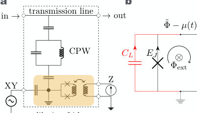
<figcaption class="paper-figure-caption"><b>Fig 1.</b> Figure 1. The lumped element model of a superconducting transmon qubit. In panel a, the illustration of the circuit of the full qubit stack inside a dilution refrigerator, with a ded- icated coplanar waveguide readout resonator, XY microwave control line, and Z flux bias line. The shaded rectangle illus- trates a transmon qubit, formed by a SQUID loop shunted by a cross-shaped capacitance. In panel b, the shaded re- gion is modeled as an idealized lumped circuit with a control- lable external magnetic flux threading the SQUID loop of the transmon, as well as showcasing the tree (red) and the chord (black) branches of the circuit graph.</figcaption>
</figure>
<figure class="paper-figure-card">
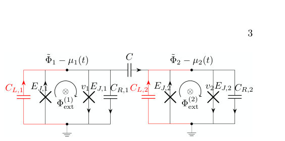
<figcaption class="paper-figure-caption"><b>Fig 2.</b> Figure 2. The lumped-element circuit of capacitively coupled tunable transmons showcasing the chosen tree (red) and the chord (black) branches of the network graph.</figcaption>
</figure>
<figure class="paper-figure-card">
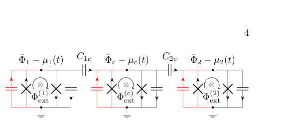
<figcaption class="paper-figure-caption"><b>Fig 3.</b> Figure 3. The lumped-element circuit model of the tunable coupler architecture. The red branches correspond to the cho- sen tree of the circuit graph, with capacitances CL,j. The chords (black) are the coupling capacitances C1c and C2c, branches of the Josepshson junctions EJ,j (left), vjEJ,j (right) and capacitances (right) CR,j. In these, j = 1, c, 2 and the labels are omitted for visual clarity.</figcaption>
</figure>
<figure class="paper-figure-card">
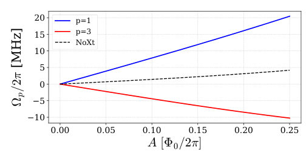
<figcaption class="paper-figure-caption"><b>Fig 4.</b> Figure 4. The strengths of the linear drive terms Ω1 (blue) and Ω3 (red) as a function of the modulation amplitude A. For comparison, we also depict these with neglected inherent crosstalk (βj = 0, dashed-line), which clearly demonstrates the significance of Eq. (30). The circuit parameters used in this plot are CΣ,1 = 77 fF, CΣ,c = 56 fF, CΣ,2 = 75 fF, C1c = 2.5 fF, Cc2 = 2.5 fF, EJ,1/2π = 10 GHz, v1 = 1, EJ,c/2π = 12 GHz, vc = 0.95, EJ,2/2π = 10.2 GHz, v2 = 1, φ(1) st /2π = 0.075, φ(c) st /2π = 0.45, φ(2) st /2π = 0. We furthermore assumed CR,j = CL,j for all j = 1, c, 2.</figcaption>
</figure>
<figure class="paper-figure-card">
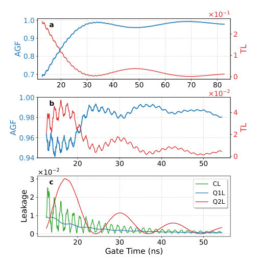
<figcaption class="paper-figure-caption"><b>Fig 5.</b> Figure 5. The average gate fidelities (AGF) and total leakage rates (TL) as a function of the gate time for a coupler-driven X gate with rectangular pulse envelope. On panel a, the static flux is set to φ(1) st /π = 0.15 which results in a detuning for qubit 2 that is close to its anharmonicity. This leads to large leakage probability and limits the time of the gate. On panel b, the static flux is reduced to φ(1) st /π = 0.09, which increases ∆3 + α3 and leads to better AGF for shorter gate times. Panel c shows the contributions of the coupler, qubit 1 and qubit 2 modes to the total leakage, respectively. The periodicity of these provides fingerprints for the identification of leakage...</figcaption>
</figure>
</div>

<p><strong>Summary.</strong> The paper theoretically analyzes inherent flux crosstalk in superconducting qubit circuits by deriving the system dynamics using Lagrangian mechanics. It shows this unintended coupling, arising from time-varying external fluxes, can be harnessed to drive fast single-qubit gates via the coupler element. This approach promises high fidelity quantum control while simplifying hardware requirements.</p>
<p><strong>Why it may be interesting.</strong> This work provides a concrete theoretical framework for engineering quantum control pulses. For AMO/open systems theorists, the derivation of an unavoidable coupling term (inherent crosstalk) that can be actively exploited is valuable, as it moves beyond treating crosstalk purely as noise to treat it as a controllable resource.</p>
<details>
<summary>Detailed structure</summary>
<p><strong>Main problem.</strong> The work investigates inherent flux crosstalk—an unavoidable coupling mechanism arising from time-varying external magnetic fluxes in superconducting qubits—and demonstrates how to harness it for fast, high-fidelity single-qubit gates.</p>
<p><strong>Main result.</strong> By utilizing the inherent flux crosstalk generated by modulating the coupler element, researchers can achieve fast single-qubit gate fidelities exceeding 99.9%, potentially eliminating the need for dedicated microwave control lines per qubit.</p>
<p><strong>Method.</strong> The analysis employs Lagrangian mechanics derived from lumped-element circuit models to derive the system Hamiltonian, followed by normal mode transformations and time-dependent perturbation theory for gate simulation.</p>
<p><strong>Model / system.</strong> The physical platform is a superconducting transmon qubit architecture featuring tunable couplers. The model uses generalized coordinates ($\Phi$) and derives the dynamics via a Lagrangian/Hamiltonian formalism that explicitly includes terms arising from $\dot{\Phi}_{	ext{ext}}(t)$.</p>
<p><strong>Key observables.</strong> Average Gate Fidelity (AGF), Total Leakage Rate, Pauli error probabilities ($p_a$), and the effective drive strength ($\Omega_p$).</p>
<p><strong>Important parameters / regimes.</strong> External flux modulation amplitude ($A$), static bias fluxes ($\phi_{st}$), and gate time ($t_g \sim 20 	ext{ ns}$).</p>
<p><strong>Assumptions / limitations.</strong> The analysis relies on the validity of the Rotating Wave Approximation (RWA) and truncating the Hamiltonian expansion to include only first and second harmonic terms.</p>
<p><strong>Figures summary.</strong> Figures illustrate the circuit model, the derivation of the Lagrangian/Hamiltonian, and crucially, show AGF vs. gate time curves demonstrating high fidelity achievable when inherent crosstalk is included in the drive calculation.</p>
<p><strong>Paper structure.</strong> The paper progresses from deriving the fundamental theory using Lagrangian mechanics to identify the inherent flux crosstalk term; it then applies this understanding by modeling the system's Hamiltonian in normal modes and finally simulates single-qubit gates, demonstrating performance metrics like AGF.</p>
</details>
<details>
<summary>Abstract</summary>
<p>Crosstalk refers to unwanted qubit addressing. This is particularly detrimental when scaling up quantum information systems because unintended interactions limit their overall performance. For superconducting qubits, tunable couplings and frequency tunability achieved through externally applied magnetic fluxes enable high-fidelity entangling gates; however, they also introduce crosstalk through unintended flux coupling. In this work, we investigate the impact of time-dependent external magnetic fluxes in quantized circuits on superconducting qubit couplings. We find that non-trivial cross-voltage driving emerges between capacitively linked qubits when the magnetic flux threading the SQUID loop of a qubit varies in time, in a manner analogous to Faraday's law of induction. Crucially, we show that this effect enables fast single qubit control through the coupler element in standard tunable-coupler architectures, potentially eliminating the need for individual microwave $XY$ control lines.</p>
</details>
<p><sub><a href="#top">↑ back to top</a></sub></p>

<p><a id="paper-2606.11056"></a></p>
<h3 id="on-pseudogap-phase-as-precursor-to-a-superconducting-dome-in-high-tc-cuprates-non-analytic-t-as-a-function-of-doping"><a href="http://arxiv.org/abs/2606.11056v1">On pseudogap phase as precursor to a superconducting dome in high-Tc cuprates: Non-analytic T* as a function of doping</a></h3>
<p><strong>Authors:</strong> Felix A. Buot<br>
<strong>Type:</strong> theory · <strong>Category:</strong> strongly correlated electrons · <strong>PDF:</strong> <a href="https://arxiv.org/pdf/2606.11056v1">https://arxiv.org/pdf/2606.11056v1</a><br>
<strong>Analysis basis:</strong> full PDF text, analyzed in chunks
<strong>Topic relevance:</strong> <code>entanglement &amp; information structure</code> <strong>2/5</strong> · <code>Keldysh / 2PI / non-Gaussian methods</code> <strong>1/5</strong> · <code>analog quantum simulation</code> <strong>1/5</strong> · <code>correlated / nonlocal dissipation</code> <strong>1/5</strong> · <code>driven-dissipative phase transition</code> <strong>1/5</strong></p>
<div class="figure-strip-hint">↔ Scroll figures horizontally</div>
<div class="paper-figures-scroll">
<figure class="paper-figure-card">
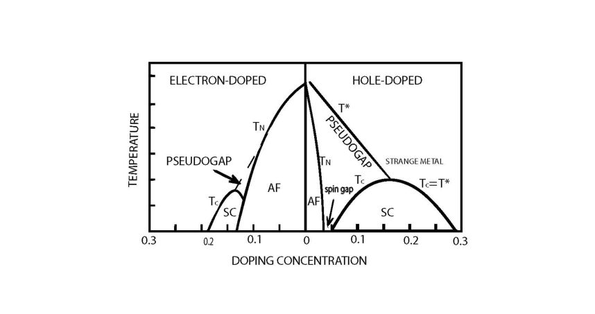
<figcaption class="paper-figure-caption"><b>Fig 1.</b> FIG. 1. Generic phase diagram for the high TC superconductors. The underdoped region is defined</figcaption>
</figure>
<figure class="paper-figure-card">

<figcaption class="paper-figure-caption"><b>Fig 2.</b> FIG. 2. The plot is compatible with decrease in T ∗with increase in doping and decrease in</figcaption>
</figure>
<figure class="paper-figure-card">
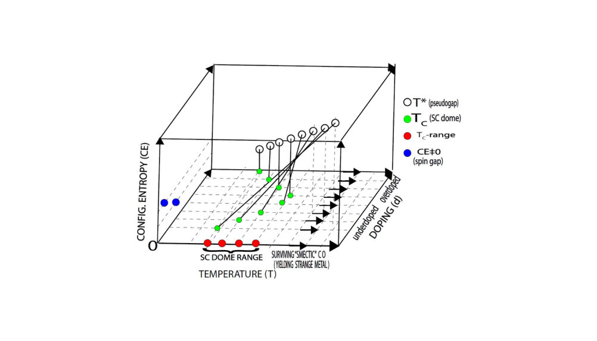
<figcaption class="paper-figure-caption"><b>Fig 3.</b> Fig. 2. Observe that the drop in temperature from the pseudogap T ∗to SC TC is inversely</figcaption>
</figure>
<figure class="paper-figure-card">
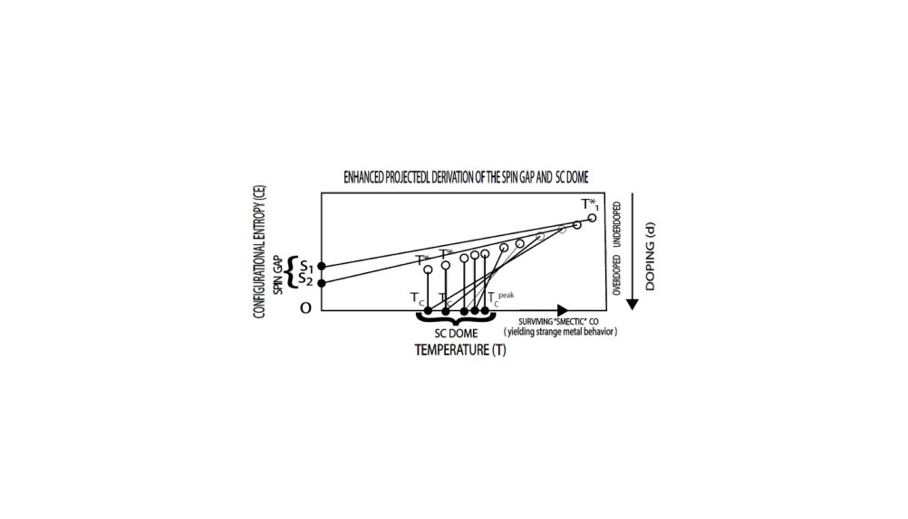
<figcaption class="paper-figure-caption"><b>Fig 4.</b> FIG. 3. This figure is an enhanced projected view from Fig.2 intended to emphasize the spin gap,</figcaption>
</figure>
</div>

<p><strong>Summary.</strong> This paper develops a generalized theory showing that the pseudogap phase can precede superconductivity if two doping-dependent conditions on pairing strength and ordering rates are met. It applies this framework to high-Tc cuprates using an entanglement and confinement pairing model, successfully explaining key features like the SC dome structure and strange metal behavior through changes in configurational entropy.</p>
<p><strong>Why it may be interesting.</strong> While focused on cuprates, the framework of analyzing phase transitions via entropy changes and rate parameters ($R$) provides a general theoretical tool applicable to understanding complex many-body dynamics in strongly correlated systems beyond standard BCS theory.</p>
<details>
<summary>Detailed structure</summary>
<p><strong>Main problem.</strong> To generalize the theoretical condition under which a quantum material exhibiting a pseudogap phase acts as a precursor to a superconducting (SC) dome.</p>
<p><strong>Main result.</strong> The SC dome formation requires two conditions: decreasing $T^*$ with doping and an increasing configurational-ordering rate ($R$) with doping, explained by a novel entanglement and confinement pairing mechanism.</p>
<p><strong>Method.</strong> Theoretical derivation using macroscopic order parameters like Configuration Entropy (CE) to characterize the transition from local pair ordering ($    ext{PO}$) to global superconducting order ($  ext{CO}$).</p>
<p><strong>Model / system.</strong> The study focuses on high-Tc cuprates, modeling them with a novel strong entanglement and confinement hole pairing (ECHP) mechanism that governs the phase diagram across doping levels.</p>
<p><strong>Key observables.</strong> $T^*$ (pseudogap temperature), $T_C$ (superconducting transition temperature), Configuration Entropy ($    ext{CE}$), and the configurational-ordering rate parameter ($R$).</p>
<p><strong>Important parameters / regimes.</strong> Doping level ($d$), Temperature ($T$), Pseudogap/Superconducting gap magnitudes.</p>
<p><strong>Assumptions / limitations.</strong> The derivation assumes a linear temperature dependence for the Configuration Entropy (CE) and relies on establishing two specific doping dependencies for $T^*$ and $R$.</p>
<p><strong>Figures summary.</strong> Figures illustrate the generic phase diagram showing the SC dome, the relationship between $   ext{CE}$ and $T$ revealing singularities where $R 	o \infty$, and the coexistence of strange metal behavior above $T_C$.</p>
<p><strong>Paper structure.</strong> The paper establishes the general criteria for pseudogap precursors to superconductivity, applies these criteria specifically to high-Tc cuprates using the ECHP mechanism, derives the non-analytic relationship between $T^*$ and $T_C$, and discusses implications for strange metal behavior.</p>
</details>
<details>
<summary>Abstract</summary>
<p>We generalize the condition under which a quantum material exhibiting a pseudogap phase is a precursor to a superconducting (SC) dome. The result reveals the non-analytic T<em> as a function of doping. A well-known example is the high-Tc cuprates. Essentially, the SC dome is generated under two conditions: (1) that the pseudogap T</em> is a decreasing function of doping, due to the decrease in size of extended pairing of doped holes with doping, and most importantly, (2) that the rate of configurational-ordering parameter is an increasing function of doping as a result of the decrease in extended length of the disordered pairs. These two conditions are provided by the new entanglement and confinement pairing mechanism of high-Tc cuprates. This is a theory that has recently been discussed in the literature by Buot et al. It hinges on a novel strong entanglement and confinement hole pairing (ECHP) mechanism that unravels the microscopic features of the entire phase diagram of both electron and hole-doped high-Tc cuprates.</p>
</details>
<p><sub><a href="#top">↑ back to top</a></sub></p>

<p><a id="paper-2606.10730"></a></p>
<h3 id="unitary-channel-testing-under-a-depolarizing-noise-assumption"><a href="http://arxiv.org/abs/2606.10730v1">Unitary Channel Testing Under a Depolarizing Noise Assumption</a></h3>
<p><strong>Authors:</strong> Hirak Ghosh, Andrew Jackson, Animesh Datta<br>
<strong>Type:</strong> theory · <strong>Category:</strong> quantum information and computing · <strong>PDF:</strong> <a href="https://arxiv.org/pdf/2606.10730v1">https://arxiv.org/pdf/2606.10730v1</a><br>
<strong>Analysis basis:</strong> full PDF text, analyzed in chunks
<strong>Topic relevance:</strong> <code>entanglement &amp; information structure</code> <strong>2/5</strong> · <code>correlated / nonlocal dissipation</code> <strong>1/5</strong> · <code>quantum measurements</code> <strong>1/5</strong></p>
<div class="figure-strip-hint">↔ Scroll figures horizontally</div>
<div class="paper-figures-scroll">
<figure class="paper-figure-card">
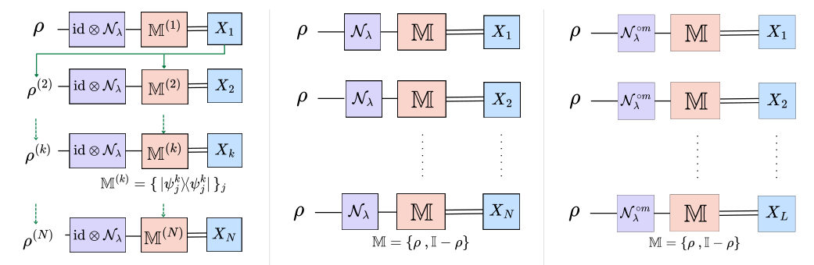
<figcaption class="paper-figure-caption"><b>Fig 1.</b> FIG. 1. (a) Ancilla-assisted, adaptive tester with arbitrary (finite) sized POVMs. Green arrows denote classical feed-forward: state preparations and measurements may depend on some or all prior measurement outcomes. (b) Non-adaptive, ancilla-free tester with fixed inputs and a two-outcome measurement. (c) m-sequential non-adaptive tester with fixed inputs and a two-outcome POVM.</figcaption>
</figure>
</div>

<p><strong>Summary.</strong> This paper provides a comprehensive theoretical analysis of quantum channel testing under depolarizing noise. It establishes optimal query complexities for distinguishing noisy channels from ideal unitaries using both standard and tolerant hypothesis tests. The work is significant because it sets fundamental resource limits on characterizing the fidelity of quantum operations.</p>
<p><strong>Why it may be interesting.</strong> The results provide rigorous complexity benchmarks for characterizing quantum hardware fidelity, which is crucial for understanding the practical limits of fault-tolerant computation protocols in terms of required experimental resources.</p>
<details>
<summary>Detailed structure</summary>
<p><strong>Main problem.</strong> The paper develops fast algorithms and establishes lower bounds for testing the strength of a quantum channel implemented by a black box, specifically under the assumption of depolarizing noise.</p>
<p><strong>Main result.</strong> Optimal query complexities are derived for both standard ($\Theta(1/\epsilon)$) and tolerant ($\Theta\left(rac{\epsilon_2}{(\epsilon_2 - \epsilon_1)^2}
ight)$) testing scenarios, showing that these bounds hold even when considering adaptive or ancilla-assisted protocols.</p>
<p><strong>Method.</strong> The analysis combines quantum hypothesis testing theory with information-theoretic tools like the diamond distance and Kullback-Leibler divergence to establish matching upper and lower bounds for query complexity.</p>
<p><strong>Model / system.</strong> The study focuses on general quantum channels $N: L(H) 	o L(H)$ acting on a system of dimension $d$, specifically analyzing deviations from the identity channel due to an assumed depolarizing noise $\mathcal{N}_\lambda$.</p>
<p><strong>Key observables.</strong> Diamond distance ($d_\diamond$), Trace distance ($d_{	ext{Tr}}$), and Query Complexity (number of channel uses).</p>
<p><strong>Important parameters / regimes.</strong> Error parameters ($\epsilon, \epsilon_1, \epsilon_2$) and the noise parameter $\lambda$.</p>
<p><strong>Assumptions / limitations.</strong> The analysis assumes perfect state preparation and measurement, and it focuses on the depolarizing noise model common in fault-tolerant quantum computation.</p>
<p><strong>Figures summary.</strong> Figures illustrate various access models for testing (e.g., ancilla-assisted adaptive vs. non-adaptive ancilla-free) and summarize the derived optimal query complexities in tables.</p>
<p><strong>Paper structure.</strong> The paper first establishes exact relationships between distinguishability measures ($d_{	ext{Tr}}$ and $d_\diamond$) for depolarizing noise, then develops upper bounds using specific algorithms (non-adaptive/ancilla-free), and finally proves matching lower bounds using information theory arguments like KL divergence.</p>
</details>
<details>
<summary>Abstract</summary>
<p>We present fast algorithms $\unicode{x2013}$ under the depolarizing noise assumption, often made in fault-tolerant quantum computations $\unicode{x2013}$ to test its strength. Our optimal algorithms answer the following question: is the quantum channel implemented by a given black box identical to a target unitary or $\varepsilon$-far from it in the diamond distance, assuming that the deviation is a depolarizing channel with unknown parameter? Our algorithm has a query complexity of $Θ(1/\varepsilon).$ The query complexity of the relaxed problem of testing whether the black-box channel is $\varepsilon_1$-close to a target unitary or $\varepsilon_2$-far in the diamond distance is $Θ\bigl(\varepsilon_2/(\varepsilon_2 - \varepsilon_1)^2\bigr).$ In both cases, we provide matching lower bounds that hold even for adaptive, ancilla-assisted protocols with multi-outcome incoherent measurements.</p>
</details>
<p><sub><a href="#top">↑ back to top</a></sub></p>

<p><a id="paper-2606.10042"></a></p>
<h3 id="quantum-non-gaussian-state-preparation-of-levitated-particles-via-time-dependent-control-of-weakly-nonharmonic-hybrid-potentials"><a href="http://arxiv.org/abs/2606.10042v1">Quantum Non-Gaussian State Preparation of Levitated Particles via Time-Dependent Control of Weakly Nonharmonic Hybrid Potentials</a></h3>
<p><strong>Authors:</strong> Piotr T. Grochowski, Oriol Romero-Isart<br>
<strong>Type:</strong> theory · <strong>Category:</strong> quantum information and computing · <strong>PDF:</strong> <a href="https://arxiv.org/pdf/2606.10042v1">https://arxiv.org/pdf/2606.10042v1</a><br>
<strong>Analysis basis:</strong> full PDF text, analyzed in chunks
<strong>Topic relevance:</strong> <code>Keldysh / 2PI / non-Gaussian methods</code> <strong>1/5</strong> · <code>analog quantum simulation</code> <strong>1/5</strong> · <code>correlated / nonlocal dissipation</code> <strong>1/5</strong> · <code>driven-dissipative phase transition</code> <strong>1/5</strong> · <code>methods for driven-dissipative</code> <strong>1/5</strong> · <code>non-equilibrium dynamics</code> <strong>1/5</strong> · <code>quantum measurements</code> <strong>1/5</strong></p>
<div class="figure-strip-hint">↔ Scroll figures horizontally</div>
<div class="paper-figures-scroll">
<figure class="paper-figure-card">
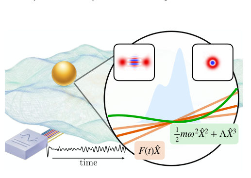
<figcaption class="paper-figure-caption"><b>Fig 1.</b> Figure 1. We consider a levitated mechanical oscillator whose me- chanical state—for example, its center-of-mass motion or libration— evolves in a weakly nonharmonic potential landscape, V ( ˆ X) = mω2 ˆ X2/2 + Λ ˆ X3. We demonstrate that temporal modulation of such a potential, where the leading nonquadratic contribution is cubic, Λ ˆ X3, enables deterministic preparation of quantum non- Gaussian states such as Fock and Schrödinger cat states. This scheme exploits the enhancement of nonlinear dynamics arising from wave- function delocalization, combined with optimal control of the mod- ulation. Specifically, we control the local linear term, F(t) ˆ X, while keeping the nonharmonicity...</figcaption>
</figure>
<figure class="paper-figure-card">
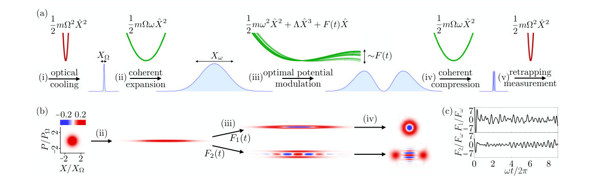
<figcaption class="paper-figure-caption"><b>Fig 2.</b> Figure 2. (a) Sketch of the protocol for preparing non-Gaussian motional states of a massive particle by combining delocalization-induced enhancement of nonharmonicity with optimal potential modulation. First, the particle is cooled close to the ground state in a tightly confining optical potential (red). It is then coherently expanded into the ground state of the shallow nonoptical potential. Optimal modulation of the nonharmonic potential then prepares the target non-Gaussian state, which is subsequently compressed back to the original trapping scale and measured in the optical potential. The strongly delocalized intermediate state enhances the weakly nonlinear dynamics during the control...</figcaption>
</figure>
<figure class="paper-figure-card">
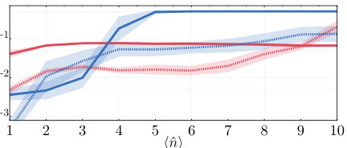
<figcaption class="paper-figure-caption"><b>Fig 3.</b> Figure 3. Results for the quantum non-Gaussian state preparation with an optimally controlled weakly cubic potential. (a) Geometric- mean infidelity for preparation of the first excited Fock state |1⟩, shown as a function of the control duration tmax and nonharmonic- ity ηω. The shaded area corresponds to half of the standard devi- ation of the log-normal distribution in the set of optimization runs. Increasing ηω beyond approximately 0.04 yields little additional re- duction in infidelity. (b) Geometric-mean preparation infidelity for Fock states |n⟩and even cat states as a function of their target mean occupation ⟨ˆn⟩and varying nonharmonicity ηω.</figcaption>
</figure>
<figure class="paper-figure-card">
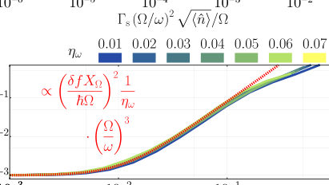
<figcaption class="paper-figure-caption"><b>Fig 4.</b> Figure 4. Effects of diffusion and static control errors on the optimal-control stage of the state-preparation protocol. (a) Mini- mum geometric-mean infidelity for preparation of the first excited Fock state as a function of the control-stage diffusion rate Γs, for several values of ηω. At each (Γs, ηω), the result is minimized over the considered control durations tmax. (b) Excess infidelity after sub- traction of the zero-noise baseline, 1 −¯F →¯F(Γs = 0) −¯F. An approximate common scaling with Γs is revealed. (c) Corresponding excess infidelity for preparation of higher-number Fock states. The data exhibit the additional approximate dependence cs ∝⟨ˆn⟩1/2. (d) Infidelity induced by a...</figcaption>
</figure>
<figure class="paper-figure-card">
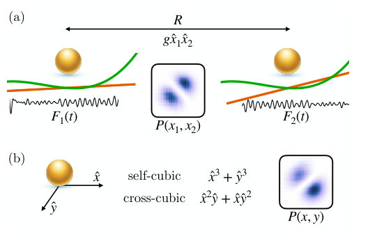
<figcaption class="paper-figure-caption"><b>Fig 5.</b> Figure 5. Configurations considered for two-mode Bell-state gener- ation. (a) Two particles separated by a distance R, each confined in a local weakly nonharmonic potential, interact through a long-range force. Motional delocalization increases the dimensionless interac- tion strength during the control stage. The interparticle coupling is bilinear and therefore Gaussian, while the required nonlinearity is provided by the local cubic terms. Independent modulation of the two local potentials then enables preparation of the symmetric me- chanical Bell state. The inset shows the optimized joint position probability density, P(x1, x2). (b) A single particle is simultane- ously delocalized in...</figcaption>
</figure>
</div>

<p><strong>Summary.</strong> The paper proposes a theoretical optimal control protocol to generate complex quantum non-Gaussian states (like Fock or cat states) in levitated particles. This is achieved by transiently delocalizing the particle's wave function and applying time-dependent modulation to the linear potential term, leveraging weak cubic anharmonicity. The method demonstrates universal control applicable to various mechanical degrees of freedom.</p>
<p><strong>Why it may be interesting.</strong> This work directly addresses the creation of non-Gaussian quantum resources in a macroscopic, mechanical system, which is highly relevant for quantum sensing and computation beyond standard harmonic approximations.</p>
<details>
<summary>Detailed structure</summary>
<p><strong>Main problem.</strong> The primary goal is the deterministic generation and manipulation of quantum non-Gaussian states, such as Fock or Schrödinger cat states, in levitated massive objects.</p>
<p><strong>Main result.</strong> A theoretical protocol was developed using time-dependent control of the linear potential component while maintaining a static cubic nonharmonicity to achieve universal mode control and state preparation.</p>
<p><strong>Method.</strong> The approach utilizes optimal quantum control theory applied to the system's Hamiltonian, involving transient wave-function delocalization followed by coherent compression.</p>
<p><strong>Model / system.</strong> The physical platform is levitated high-mass quantum systems whose motion is modeled by a weakly nonharmonic potential containing harmonic and cubic terms. The dynamics are analyzed using both Schrödinger equation evolution and density matrix master equations incorporating dissipation.</p>
<p><strong>Key observables.</strong> State-transfer fidelity ($F$), geometric-mean infidelity ($ar{F}$), Wigner functions, and quadrature measurements.</p>
<p><strong>Important parameters / regimes.</strong> Nonharmonicity parameter ($\eta_
u$), motional delocalization ($\Delta X/X_
u$), and maximum tolerable decoherence rates.</p>
<p><strong>Assumptions / limitations.</strong> The analysis relies on truncating the potential expansion at the cubic term; high-number states challenge this assumption due to increased spatial extent.</p>
<p><strong>Figures summary.</strong> Figures illustrate the multi-stage protocol (cooling, delocalization via control, compression) and show Wigner functions for target states like $|1
angle$ and cat states, alongside infidelity scaling plots versus control time or nonharmonicity strength.</p>
<p><strong>Paper structure.</strong> The paper outlines a five-step optimal control protocol: ground state preparation $
ightarrow$ coherent transfer to low potential $
ightarrow$ delocalized state preparation via linear modulation $
ightarrow$ coherent compression $
ightarrow$ measurement. Extensions cover two-particle Bell state generation.</p>
</details>
<details>
<summary>Abstract</summary>
<p>Levitated high-mass quantum systems provide access to unprecedented regimes in both fundamental science and technological applications. However, deterministic generation and manipulation of quantum non-Gaussian states, which are central to many continuous-variable quantum advantages, remain elusive in such platforms. In this work, we propose a theoretical protocol for preparing a continuous-variable degree of freedom of a levitated massive object in a variety of quantum states, including Fock and Schrödinger cat states, without coupling to auxiliary two-level systems. Our approach enhances otherwise weak nonharmonic effects by transient wave-function delocalization and combines this with optimal control of the potential. Specifically, time-dependent modulation of the linear component of the potential, in the presence of a static cubic nonharmonicity, provides a route to universal control of the mode. We analyze quantum state preparation under such control and estimate the required nonharmonicity, motional delocalization, and maximum tolerable decoherence for generating target non-Gaussian states. The proposed optimal-control scheme can also be readily extended beyond single-particle state preparation, for example, to unitary transformations and nonlinear measurements. As a concrete example, we demonstrate mechanical Bell-state preparation for two interacting particles using only local modulation of weakly nonharmonic potentials, while the interparticle interaction remains effectively linear. We emphasize that the protocols presented here apply to different mechanical degrees of freedom, such as center-of-mass motion and libration, and can also be implemented in other weakly nonharmonic systems with a leading cubic nonharmonicity.</p>
</details>
<p><sub><a href="#top">↑ back to top</a></sub></p>

<p><a id="paper-2606.10222"></a></p>
<h3 id="multifractal-signatures-of-ageing-and-dementia-development-a-multifractal-space-filling-curve-analysis"><a href="http://arxiv.org/abs/2606.10222v1">Multifractal Signatures of Ageing and Dementia Development: A Multifractal Space-Filling Curve Analysis</a></h3>
<p><strong>Authors:</strong> Marta Lotka, Jacek Grela, Zbigniew Drogosz, Jeremi K. Ochab, Paweł Oświęcimka<br>
<strong>Type:</strong> experiment · <strong>Category:</strong> disordered systems and neural networks · <strong>PDF:</strong> <a href="https://arxiv.org/pdf/2606.10222v1">https://arxiv.org/pdf/2606.10222v1</a><br>
<strong>Analysis basis:</strong> full PDF text, analyzed in chunks
<strong>Topic relevance:</strong> <code>analog quantum simulation</code> <strong>1/5</strong> · <code>driven-dissipative phase transition</code> <strong>1/5</strong> · <code>entanglement &amp; information structure</code> <strong>1/5</strong> · <code>methods for driven-dissipative</code> <strong>1/5</strong> · <code>non-equilibrium dynamics</code> <strong>1/5</strong> · <code>non-equilibrium universality</code> <strong>1/5</strong></p>
<div class="figure-strip-hint">↔ Scroll figures horizontally</div>
<div class="paper-figures-scroll">
<figure class="paper-figure-card">
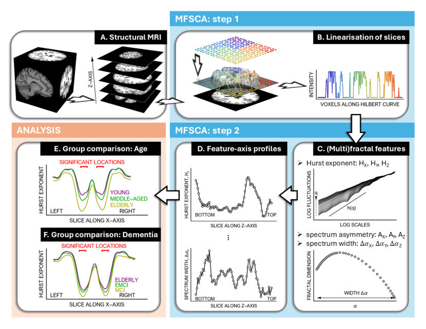
<figcaption class="paper-figure-caption"><b>Fig 1.</b> FIG. 1: Flowchart of the Multifractal Space-filling Curve Analysis (MFSCA). A. Skull-stripped MRI volume is analyzed slice by slice along a given axis. B. Each slice is overlaid with a space-filling curve (Hilbert curve). A one-dimensional representation of the slice is formed by voxel intensity along the curve. C. Multifractal detrended fluctuation analysis, see eq. (5), provides the generalized Hurst exponent h(q) and the multifractal spectrum f(α). The Hurst exponent H = h(2), the width of the spectrum ∆α, and its asymmetry A are later used as features describing the slice. D. The multifractal features of all slices along a given axis are collected and plotted as brain profiles. Profiles...</figcaption>
</figure>
<figure class="paper-figure-card">
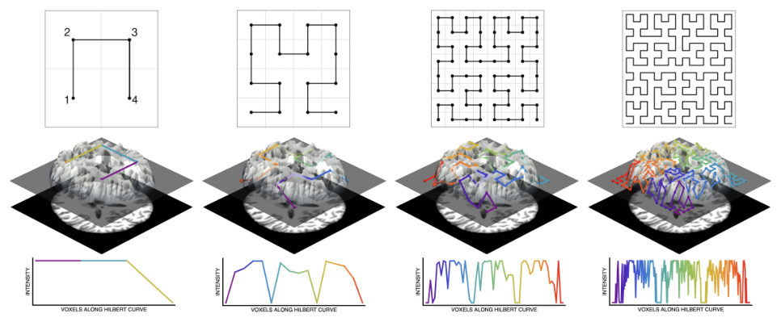
<figcaption class="paper-figure-caption"><b>Fig 2.</b> FIG. 2: Mapping voxel intensity into 1D. (Top) First four iterations of Hilbert space-filling curves on a square grid. In a given slice of MRI volume, the final iteration of the curve sets the order of traversal of all voxel centers of that slice. (Middle) Visualization of the MRI volume’s slice. The 3D landscape illustrates voxel intensities in that slice. The intensities are mapped onto the positions of the voxels along the curve. (Bottom) Linearized slice, i.e., one-dimensional representation of voxel intensities along the Hilbert curve.</figcaption>
</figure>
<figure class="paper-figure-card">
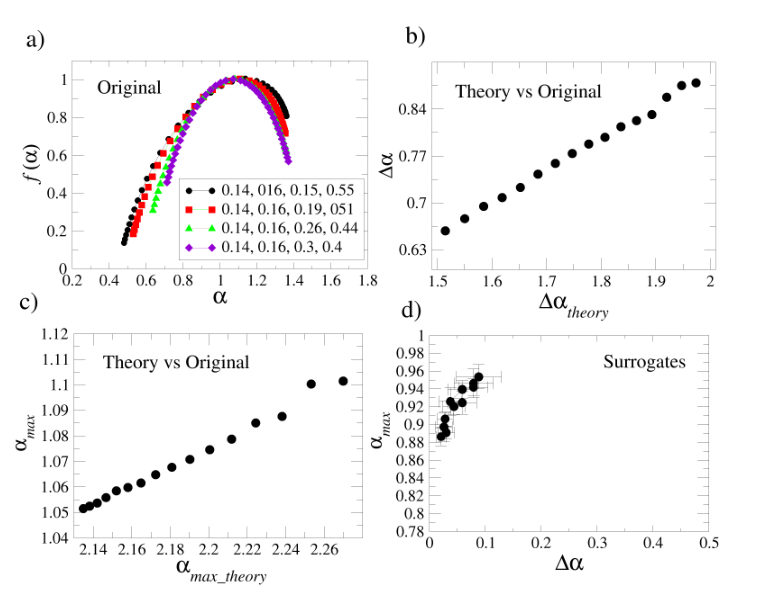
<figcaption class="paper-figure-caption"><b>Fig 3.</b> FIG. 3: MFSCA analysis of the deterministic cascades. a) Multifractal spectra obtained for the sample cascades with different degrees of complexity (width of the multifractal spectrum). b) Comparison of the estimated widths of the multifractal spectrum with its theoretical counterparts. c) comparison of the maxima localisation estimated spectra f(α) with theoretical counterparts. d) multifractal spectrum characteristics for the surrogate data - only linear correlations are preserved. Error bars denote the standard deviation over 10 realizations.</figcaption>
</figure>
<figure class="paper-figure-card">

<figcaption class="paper-figure-caption"><b>Fig 4.</b> FIG. 4: (Top) Fluctuation functions for slice 129 along the y-axis (sagittal) for representative individuals from each cohort. (Bottom) Corresponding multifractal spectra.</figcaption>
</figure>
<figure class="paper-figure-card">

<figcaption class="paper-figure-caption"><b>Fig 5.</b> FIG. 5: Slice-wise profiles of the long-scale Hurst exponent H for the Young, Middle-Aged, and Elderly Control cohorts in the OASIS-1 dataset. The panels show profiles along the x (top), y (middle), z (bottom) axes. In each panel, the cohort median H value at each slice is indicated by a dot, and neighbouring points are connected to highlight the profile shape. The shaded bands indicate the 95% bootstrap confidence interval of the median (nboot = 5000). The labels inside the panels indicate the anatomical orientation of the slice index. The stars mark slices at which the corresponding pair of cohorts differs significantly, based on a bootstrap test with within-slice Holm correction (p &lt;...</figcaption>
</figure>
</div>

<p><strong>Summary.</strong> This paper introduces Multifractal Space-filling Curve Analysis (MFSCA) to analyze brain MRI scans across different stages of aging and dementia. By quantifying the degree of multifractality, the authors demonstrate that this complex spatial organization systematically degrades towards a simpler, monofractal structure as cognitive decline worsens. This suggests that multifractality serves as a quantitative biomarker for neurodegenerative processes.</p>
<p><strong>Why it may be interesting.</strong> While the application is biological, the core methodology—quantifying complex non-linear correlations in high-dimensional data using fractal geometry—is mathematically rigorous and shares conceptual overlap with characterizing complexity in disordered quantum systems or neural network dynamics.</p>
<details>
<summary>Detailed structure</summary>
<p><strong>Main problem.</strong> The study aims to quantify the nonlinear, scale-free properties of complex biological data, specifically analyzing how spatial organization in brain structures degrades during aging and dementia.</p>
<p><strong>Main result.</strong> The analysis reveals a progressive weakening of multifractality—a transition from rich multifractal structure towards a homogeneous, monofractal state—as age increases and dementia progresses.</p>
<p><strong>Method.</strong> A novel Multifractal Space-filling Curve Analysis (MFSCA) is employed to project high-dimensional MRI data onto 1D time series, which are then analyzed using multifractal algorithms like MFDFA.</p>
<p><strong>Model / system.</strong> The system under study is human brain structure derived from T1-weighted Magnetic Resonance Imaging (MRI) scans of subjects across various cognitive cohorts (Young Control through MCI).</p>
<p><strong>Key observables.</strong> Multifractal profiles, generalized Hurst exponent h(q), multifractal spectrum width ($\Delta\alpha$), and asymmetry ($A$).</p>
<p><strong>Important parameters / regimes.</strong> Age groups (e.g., Young vs. Elderly) and cognitive impairment stages (e.g., EMCI vs. MCI).</p>
<p><strong>Assumptions / limitations.</strong> The analysis assumes that the loss of multifractality directly correlates with structural deterioration in brain organization, and uses techniques like IPTW to mitigate bias in observational comparisons.</p>
<p><strong>Figures summary.</strong> Figures illustrate MFSCA flowcharts, group comparisons showing decreasing $\Delta\alpha$ and $H$ from young controls to dementia patients, and dimensionality reduction plots (t-SNE/LDA) separating the cognitive cohorts.</p>
<p><strong>Paper structure.</strong> The paper introduces MFSCA for multidimensional data analysis, validates it using artificial cascades, applies it to OASIS-1 MRI data across age/dementia groups, quantifies metrics ($\Delta\alpha$, $A$), and uses LDA/t-SNE to show systematic progression along a continuum of disorder.</p>
</details>
<details>
<summary>Abstract</summary>
<p>Multifractality is an effective formalism for quantifying the nonlinear, scale-free properties of complex data. In this study, we propose a novel and efficient methodology, termed Multifractal Space-filling Curve Analysis (MFSCA), for quantifying the correlation structure of multidimensional data. Within this framework, the original multidimensional data - while preserving both local and long-range organisational properties - are projected onto a one-dimensional representation using a fractal space-filling curve. The resulting one-dimensional signal is then analysed using multifractal algorithms. We demonstrate the utility of the method using both artificially generated multifractal structures and real data. In particular, we apply MFSCA to analyse magnetic resonance imaging (MRI) data from Alzheimer patients at different stages of dementia. Based on the results, we estimate the multifractal profiles of the brain for healthy subjects of different ages as well as for dementia patients. The analysis reveals that the spatial organization of brain structures, as measured by the degree of multifractality, progressively weakens with age and the development of dementia. A transition from multifractality to monofractality is observed both in control groups, when comparing the Young Control and Elderly Control groups, and among dementia subjects of similar age but at different stages of the disease, namely early dementia and mild cognitive impairment. Thus, from the perspective of multiscaling properties, the heterogeneous characteristics of spatial brain organization deteriorate under worsening conditions, leading to a homogeneous and weakly correlated structure. These findings not only effectively capture key aspects of brain organisation, but also demonstrate that the multifractality of MRI data can serve as a marker of structural brain changes.</p>
</details>
<p><sub><a href="#top">↑ back to top</a></sub></p>

<p><a id="paper-2606.10647"></a></p>
<h3 id="hawking-page-phase-transition-for-pure-lovelock-black-holes"><a href="http://arxiv.org/abs/2606.10647v1">Hawking-Page phase transition for pure Lovelock black holes</a></h3>
<p><strong>Authors:</strong> Nitesh K. Dubey, Sanved Kolekar<br>
<strong>Type:</strong> theory · <strong>Category:</strong> statistical mechanics · <strong>PDF:</strong> <a href="https://arxiv.org/pdf/2606.10647v1">https://arxiv.org/pdf/2606.10647v1</a><br>
<strong>Analysis basis:</strong> full PDF text, analyzed in chunks
<strong>Topic relevance:</strong> <code>driven-dissipative phase transition</code> <strong>1/5</strong> · <code>entanglement &amp; information structure</code> <strong>1/5</strong> · <code>methods for driven-dissipative</code> <strong>1/5</strong> · <code>non-equilibrium dynamics</code> <strong>1/5</strong> · <code>non-equilibrium universality</code> <strong>1/5</strong></p>
<div class="figure-strip-hint">↔ Scroll figures horizontally</div>
<div class="paper-figures-scroll">
<figure class="paper-figure-card">

<figcaption class="paper-figure-caption"><b>Fig 1.</b> Figure 1: The above figure shows the plots for the Gibbs free energy vs temperature. In panels F1, F2, F3, and F4, the colours {Red, Blue, Green} represent the potential Φ with values {0, 0.25, 0.7}. In figures F5 and F6, the colours {Orange, Cyan, Black} represent pressure values of {0.7, 0.5, 0.3}.</figcaption>
</figure>
<figure class="paper-figure-card">

<figcaption class="paper-figure-caption"><b>Fig 2.</b> Figure 2: The above plots depict the dependence of the normalized Ruppeiner scalar curvature on the electric potential Φ and pressure P. In panels F1, F2, F3, F4 the pressure is kept constant. Solid Colour plots with color {Red,Blue, Green} represent pressure {27,23, 17} while the dashed plots with color {Red, Blue, Green} have pressure {10,7,5}. In panels F5, F6 the electric potential is fixed with colors {Orange,Cyan, Black} representing electric potential {0.03,0.1, .15}. The pink dashed curves in F3 and F4 describe the constant electrostatic potential at which RN of the red curves changes sign from negative to positive.</figcaption>
</figure>
</div>

<p><strong>Summary.</strong> This work analyzes the Hawking-Page phase transition for black holes in higher-curvature pure Lovelock gravity within AdS spacetime. It uses advanced thermodynamic geometry, specifically the Ruppeiner scalar curvature, to probe universality across different dimensions and charges. The findings reveal that while simple dualities hold in General Relativity, these universal relationships are modified or broken by higher-order curvature terms.</p>
<p><strong>Why it may be interesting.</strong> While focused on gravity, the use of Ruppeiner geometry and phase transition analysis directly relates to statistical mechanics concepts of critical points and thermodynamic stability in complex systems.</p>
<details>
<summary>Detailed structure</summary>
<p><strong>Main problem.</strong> The study investigates the thermodynamic properties and phase structure of Anti-de Sitter (AdS) black holes governed by pure Lovelock gravity, focusing on the Hawking-Page (HP) phase transition.</p>
<p><strong>Main result.</strong> The normalized Ruppeiner scalar curvature at the HP transition is shown to be a universal constant depending only on spacetime dimension for neutral cases. The simple dual relationship between minimum temperature and $T_{HP}$ breaks down in higher pure Lovelock theories.</p>
<p><strong>Method.</strong> Thermodynamic analysis, utilizing the grand canonical ensemble, calculating Gibbs free energy ($G$), and employing geometric tools like the Ruppeiner scalar curvature to diagnose phase transitions.</p>
<p><strong>Model / system.</strong> Static, spherically symmetric AdS black holes described by pure Lovelock gravity in $d$ dimensions. The analysis extends to include electric charge ($\Phi$) and varying the Lovelock order ($n$).</p>
<p><strong>Key observables.</strong> Hawking temperature minimum ($T_0$), Hawking-Page transition temperature ($T_{HP}$), Gibbs free energy ($G$), and normalized Ruppeiner scalar curvature ($R_N$).</p>
<p><strong>Important parameters / regimes.</strong> Spacetime dimension ($d$), Lovelock order ($n$), electrostatic potential ($\Phi$), and thermodynamic pressure ($P$).</p>
<p><strong>Assumptions / limitations.</strong> The analysis assumes the validity of the grand canonical ensemble description and relies on interpreting $G=0$ for the HP transition. Approximations are used in analyzing joint limits of $\Phi$ and $P$.</p>
<p><strong>Figures summary.</strong> Figures illustrate plots showing the dependence of the normalized Ruppeiner scalar curvature ($R_N$) on electrostatic potential ($\Phi$) and pressure ($P$), demonstrating plateaus and sign changes at the HP transition.</p>
<p><strong>Paper structure.</strong> The paper systematically analyzes the phase structure by comparing $T_0$ (local minimum) with $T_{HP}$ (global free energy crossing). It then uses geometric diagnostics like $R_N$ to characterize the universality of this transition across different Lovelock orders and charge regimes.</p>
</details>
<details>
<summary>Abstract</summary>
<p>We investigate the thermodynamic properties of static, spherically symmetric Anti-de Sitter (AdS) black holes, focusing on the interplay between characteristic temperatures, as well as on the universality of Ruppeiner scalar curvature at the Hawking-Page (HP) phase transition. In particular, we study the relation between the minimum temperature and the HP phase transition temperature for static, spherically symmetric AdS black holes in pure Lovelock gravity. For the electromagnetically neutral case in Einstein gravity, the minimum temperature in $(d+1)$ dimensions coincides with the HP transition temperature in $d$ dimensions, while in higher pure Lovelock theories this relation is modified by a dimension- and order-dependent factor, reducing to the Einstein result in appropriate limits. For charged AdS black holes, in the grand canonical ensemble, in general relativity, the two temperatures differ by a simple dimension-dependent factor, whereas no universal relation persists in higher curvature pure Lovelock theories. We further analyze the normalized Ruppeiner scalar curvature at the HP transition and show that it is a universal constant depending only on the spacetime dimension for electromagnetically neutral black holes in pure Lovelock theories. The normalized scalar curvature remains a constant, under appropriate conditions, even for the charged static spherically symmetric black holes in the grand canonical ensemble for the Einstein theory case, whereas in general pure Lovelock theories it depends on thermodynamic parameters such as pressure and electrostatic potential, asymptotically approaching a constant in the large-pressure or simultaneous large-potential and large-pressure limits.</p>
</details>
<p><sub><a href="#top">↑ back to top</a></sub></p>

<p><a id="paper-2606.10826"></a></p>
<h3 id="the-fidelity-of-controlled-quantum-teleportation-in-a-noisy-environment"><a href="http://arxiv.org/abs/2606.10826v1">The fidelity of controlled quantum teleportation in a noisy environment</a></h3>
<p><strong>Authors:</strong> Wen-Jing Wei, Feng-Li Yan, Ting Gao<br>
<strong>Type:</strong> theory · <strong>Category:</strong> quantum information and computing · <strong>PDF:</strong> <a href="https://arxiv.org/pdf/2606.10826v1">https://arxiv.org/pdf/2606.10826v1</a><br>
<strong>Analysis basis:</strong> full PDF text, analyzed in chunks
<strong>Topic relevance:</strong> <code>Keldysh / 2PI / non-Gaussian methods</code> <strong>1/5</strong> · <code>correlated / nonlocal dissipation</code> <strong>1/5</strong> · <code>driven-dissipative phase transition</code> <strong>1/5</strong> · <code>entanglement &amp; information structure</code> <strong>1/5</strong> · <code>methods for driven-dissipative</code> <strong>1/5</strong></p>
<div class="figure-strip-hint">↔ Scroll figures horizontally</div>
<div class="paper-figures-scroll">
<figure class="paper-figure-card">

<figcaption class="paper-figure-caption"><b>Fig 1.</b> FIG. 1: When a1 = 0 (a), a1 = 1 2 (b), a1 = √</figcaption>
</figure>
<figure class="paper-figure-card">

<figcaption class="paper-figure-caption"><b>Fig 2.</b> FIG. 2: Evolutions of F 2 max above the classical threshold value when the qubit B is subject to the generalized noisy channels with different channel parameters.</figcaption>
</figure>
<figure class="paper-figure-card">

<figcaption class="paper-figure-caption"><b>Fig 3.</b> FIG. 3: For a1 = 0 (a), a1 = 1</figcaption>
</figure>
<figure class="paper-figure-card">

<figcaption class="paper-figure-caption"><b>Fig 4.</b> FIG. 4: Evolution of (a) F 1 max, (b) F 2 max, and (c) F 3 max for different values of the channel parameter ζ ∈[0, 2π], and a1 = √</figcaption>
</figure>
<figure class="paper-figure-card">

<figcaption class="paper-figure-caption"><b>Fig 5.</b> FIG. 5: Evolution of the optimal average fidelity above the classical threshold value when the qubits A, B, C are subject to the same generalized noisy channel, for the channel parameter ζA = 0, resource state parameter a1 = √</figcaption>
</figure>
</div>

<p><strong>Summary.</strong> This work analyzes how various types of noise affect the success rate (fidelity) of controlled quantum teleportation. By deriving complex analytical expressions, the authors show that fidelity does not always decrease monotonically with increasing noise; instead, it can exhibit non-monotonic behavior. This highlights that the impact of decoherence is highly dependent on both the initial entanglement and which qubit interacts with the noisy channel.</p>
<p><strong>Why it may be interesting.</strong> The finding that fidelity can increase after an initial drop due to noise is crucial for understanding practical quantum communication channels, suggesting potential recovery or resilience mechanisms beyond simple decay models.</p>
<details>
<summary>Detailed structure</summary>
<p><strong>Main problem.</strong> The study investigates how noise degrades the fidelity of controlled quantum teleportation protocols.</p>
<p><strong>Main result.</strong> The optimal average fidelity can exhibit non-monotonic behavior, first decreasing and then increasing with the evolution parameter, depending on initial entanglement and channel parameters.</p>
<p><strong>Method.</strong> The authors derive analytical expressions for the maximal average fidelity ($F_{	ext{max}}$) by modeling noise using generalized noisy channels parameterized by Kraus operators.</p>
<p><strong>Model / system.</strong> The system involves controlled quantum teleportation utilizing a tripartite entangled resource state $|\Psi
angle_{ABC}$. Noise is modeled as local, independent quantum channels ($\Lambda_{ABC} = \Lambda_A \otimes \Lambda_B \otimes \Lambda_C$) acting on the three qubits.</p>
<p><strong>Key observables.</strong> Maximal average fidelity ($F_{	ext{max}}$) and optimal average fidelity.</p>
<p><strong>Important parameters / regimes.</strong> Channel parameters ($q, k, r$), evolution angles ($\zeta_A, \zeta_B, \zeta_C$), and initial state entanglement parameters ($a_0, a_1$).</p>
<p><strong>Assumptions / limitations.</strong> The noise is assumed to be local and independent across the three qubits. The analysis often simplifies by considering only one or two qubits passing through noise.</p>
<p><strong>Figures summary.</strong> Figures illustrate $F_{	ext{max}}$ as functions of channel parameters ($\zeta_A, q$) for different initial state conditions ($a_1$ vs $a_0$), visually confirming the non-monotonic dependence on noise strength.</p>
<p><strong>Paper structure.</strong> The paper progresses by first defining the noisy resource state and calculating $F_{	ext{max}}$ generally. It then analyzes specific cases (e.g., only one qubit noisy, all three qubits noisy) to derive simplified analytical expressions and demonstrate the non-monotonic behavior based on parameter regimes.</p>
</details>
<details>
<summary>Abstract</summary>
<p>In this work, we investigate controlled quantum teleportation in the presence of noisy channels acting on the three-qubit resource state. We employ a series of generalized noisy channels that bridge the dephasing channels and amplitude damping channels while encompassing extensive intermediate scenarios. We provide an in-depth analysis of the degradation of the maximal average fidelity and the optimal average fidelity in controlled quantum teleportation induced by such noisy channels by deriving the analytical expression and examining several special cases. The analytical expression shows that attaining the optimal average fidelity requires Charlie's cooperation in performing a measurement at suitably chosen angles, and is also related to the initial state and the channel parameters. Our analysis reveals that the optimal average fidelity does not always decrease monotonically with the evolution parameter, instead, it first decreases and then increases. This non-monotonic behavior depends on the entanglement of the initial resource state, as well as on the parameters of the channel traversed by the first qubit.</p>
</details>
<p><sub><a href="#top">↑ back to top</a></sub></p>

<p><a id="paper-2606.10055"></a></p>
<h3 id="identical-bosons-large-occupation-numbers-and-classical-field-description"><a href="http://arxiv.org/abs/2606.10055v1">Identical Bosons, large occupation numbers and classical field description</a></h3>
<p><strong>Authors:</strong> Gaurav Goswami<br>
<strong>Type:</strong> theory · <strong>Category:</strong> quantum gases · <strong>PDF:</strong> <a href="https://arxiv.org/pdf/2606.10055v1">https://arxiv.org/pdf/2606.10055v1</a><br>
<strong>Analysis basis:</strong> full PDF text, analyzed in chunks
<strong>Topic relevance:</strong> <code>Keldysh / 2PI / non-Gaussian methods</code> <strong>1/5</strong> · <code>analog quantum simulation</code> <strong>1/5</strong> · <code>driven-dissipative phase transition</code> <strong>1/5</strong> · <code>methods for driven-dissipative</code> <strong>1/5</strong></p>
<div class="figure-strip-hint">↔ Scroll figures horizontally</div>
<div class="paper-figures-scroll">
<figure class="paper-figure-card">

<figcaption class="paper-figure-caption"><b>Fig 1.</b> FIG. 1: When the coefficients cn are uniformly distributed within (−1, 1), there is no correlation between the most quantities of our interest (except between σφ and ⟨N⟩in (c), with Pearson coefficient = 0.31 i.e. a weak correlation). In (d), the dashed line corresponds to σφ/|⟨φ⟩| for cns for a coherent state.</figcaption>
</figure>
<figure class="paper-figure-card">

<figcaption class="paper-figure-caption"><b>Fig 2.</b> FIG. 2: When the coefficients cn are uniformly distributed within (0, 2), we begin to see weak correlations between the various quantities of our interest: the values of Pearson coefficient for the sub-figures being 0.55, -0.57, 0.20, -0.20 respectively. In (d), in addition to the dashed line for the case of coherent state, the solid line and dotted line correspond to σφ/|⟨φ⟩| = 1 and 1/2.</figcaption>
</figure>
<figure class="paper-figure-card">

<figcaption class="paper-figure-caption"><b>Fig 3.</b> FIG. 3: Small and large deviations from coherent states: (a) |α|2 = 25, f = 0.1, (b), |α|2 = 25, f = 0.5, (c) |α|2 = 80, f = 2.0. As we increase the deviation from coherent state by increasing f, the ratio σφ/|⟨φ⟩| becomes larger and eventually, classical behaviour is lost.</figcaption>
</figure>
</div>

<p><strong>Summary.</strong> This work rigorously tests the assumption that large occupation numbers automatically imply classical field behavior for Bosons. The authors demonstrate that this is false; instead, the validity of the classical description hinges on how closely the quantum state resembles a coherent state. This has direct implications for modeling phenomena like ultra-light dark matter.</p>
<p><strong>Why it may be interesting.</strong> It provides a rigorous theoretical boundary condition for the semi-classical limit in many-body physics, which is crucial for interpreting cosmological simulations involving quantum fields (like wave DM).</p>
<details>
<summary>Detailed structure</summary>
<p><strong>Main problem.</strong> The paper investigates the conditions under which a quantum system of identical Bosons, characterized by a large mean occupation number, can be accurately described using classical field theory.</p>
<p><strong>Main result.</strong> Classical behavior is not guaranteed merely by having a large occupation number; instead, it requires the quantum state to remain close to that of a coherent state.</p>
<p><strong>Method.</strong> The analysis uses theoretical diagnostics based on comparing the standard deviation ($\sigma_\varphi$) to the expectation value ($|\langle\varphi
angle|$) using the criterion $2\sigma_\varphi < |\langle\varphi
angle|$.</p>
<p><strong>Model / system.</strong> The system models non-relativistic, identical Bosons (relevant for ultra-light dark matter or Bose-Einstein Condensates) described by a quantum field operator $\hat{\varphi}(\mathbf{r})$. The state space is analyzed via its expansion in Fock states.</p>
<p><strong>Key observables.</strong> Standard deviation ($\sigma_\varphi$), mean occupation number ($\langle N
angle$), and the ratio $\sigma_\varphi / |\langle\varphi
angle|$.</p>
<p><strong>Important parameters / regimes.</strong> The degree of deviation ($f$) from a coherent state, which governs the proximity to classicality.</p>
<p><strong>Assumptions / limitations.</strong> It is assumed that the Hamiltonian commutes with the total number operator ($\hat{H}$ commutes with $\hat{N}_{	ext{tot}}$) for simplicity in analyzing the state space structure.</p>
<p><strong>Figures summary.</strong> Figures illustrate how increasing the deviation of quantum coefficients from those defining a coherent state increases the ratio $\sigma_\varphi / |\langle\varphi
angle|$, causing a breakdown of classical behavior.</p>
<p><strong>Paper structure.</strong> The paper first establishes the general problem and criterion for classicality. It then analyzes various types of quantum states (random, positive-coefficient, near-coherent) to test if large occupation number is sufficient. Finally, it discusses implications for physical systems like ultra-light dark matter.</p>
</details>
<details>
<summary>Abstract</summary>
<p>For a system with a large number of identical Bosons, it is common to claim, often without any additional justifications, that, when the mean occupation number in a single particle state is sufficiently large, classical field description will be applicable. This is why e.g. for ultra-light dark matter, the classical field equations are used to compute its dynamics. In this work, we test the validity and robustness of this assumption based on the criterion $2 σ_\varphi &lt; |\langle \varphi \rangle| $ for classical field behaviour and applying it to aribtrary quantum states. We find that an arbitrary state with large occupation number doesn't behave classically while imposing some restrictions on the state vectors can improve the classical behavior. Since coherent states are known to have quasi-classical behaviour, we also ask how much deviation from coherent state can spoil the classical behaviour. Based on this analysis, we find that it is the proximity of the state to a large occupation coherent state rather than large occupation number itself which ensures validity of classical description. Implications of this for ultra light dark matter are discussed.</p>
</details>
<p><sub><a href="#top">↑ back to top</a></sub></p>

<p><a id="paper-2606.11171"></a></p>
<h3 id="algorithmic-and-minimax-complexities-in-kernel-bandits"><a href="http://arxiv.org/abs/2606.11171v1">Algorithmic and Minimax Complexities in Kernel Bandits</a></h3>
<p><strong>Authors:</strong> Yunbei Xu<br>
<strong>Type:</strong> theory · <strong>Category:</strong> statistical mechanics · <strong>PDF:</strong> <a href="https://arxiv.org/pdf/2606.11171v1">https://arxiv.org/pdf/2606.11171v1</a><br>
<strong>Analysis basis:</strong> full PDF text, analyzed in chunks
<strong>Topic relevance:</strong> <code>Keldysh / 2PI / non-Gaussian methods</code> <strong>1/5</strong> · <code>entanglement &amp; information structure</code> <strong>1/5</strong></p>
<div class="figure-strip-hint">↔ Scroll figures horizontally</div>
<div class="paper-figures-scroll">
<figure class="paper-figure-card">

<figcaption class="paper-figure-caption"><b>Fig 1.</b> Low-resolution page preview, page 2</figcaption>
</figure>
<figure class="paper-figure-card">

<figcaption class="paper-figure-caption"><b>Fig 2.</b> Low-resolution page preview, page 3</figcaption>
</figure>
<figure class="paper-figure-card">

<figcaption class="paper-figure-caption"><b>Fig 3.</b> Low-resolution page preview, page 4</figcaption>
</figure>
<figure class="paper-figure-card">

<figcaption class="paper-figure-caption"><b>Fig 4.</b> Low-resolution page preview, page 5</figcaption>
</figure>
<figure class="paper-figure-card">

<figcaption class="paper-figure-caption"><b>Fig 5.</b> Low-resolution page preview, page 6</figcaption>
</figure>
</div>

<p><strong>Summary.</strong> This paper develops a unified framework to compare performance guarantees for sequential learning algorithms like GP-UCB and MAMS in kernel bandit problems. It mathematically proves that the information gained by an algorithm based on its specific prior (algorithmic view) can differ significantly from the worst-case guarantee derived over the entire model class (minimax view). This distinction is crucial for selecting appropriate theoretical bounds.</p>
<p><strong>Why it may be interesting.</strong> While not directly about quantum systems, the rigorous comparison of different complexity measures (algorithmic vs. worst-case) mirrors theoretical challenges in characterizing resource limitations in complex physical models where multiple optimization criteria might apply simultaneously.</p>
<details>
<summary>Detailed structure</summary>
<p><strong>Main problem.</strong> The paper aims to unify and compare three distinct theoretical views of sequential learning performance—algorithmic, information-theoretic/minimax, and class-wide worst-case regret—within the context of kernel bandits.</p>
<p><strong>Main result.</strong> It demonstrates that algorithmic information gain (from GP-UCB) and class-wide minimax coefficients answer different questions, providing a clean setting in kernel bandits where this distinction is mathematically visible.</p>
<p><strong>Method.</strong> The analysis uses unified MAIR frameworks, deriving identities linking Bayesian posterior updates to realized algorithmic information gain, and comparing these against saddle-point optimization criteria for minimax bounds.</p>
<p><strong>Model / system.</strong> The model is a frequentist linear/kernel truth $f^\star(x)$ in an RKHS, observed with Gaussian noise. The setting is generalized using heterogeneous positive-semidefinite (PSD) algorithmic priors ($\Gamma$) and involves comparing performance across structured truths versus worst-case class bounds.</p>
<p><strong>Key observables.</strong> Regret ($R_T$), Algorithmic Information Gain ($I_{T,\Gamma}$), Minimax Regret-Information Coefficient, and the Model-index Algorithmic Information Ratio (MAIR).</p>
<p><strong>Important parameters / regimes.</strong> The complexity is governed by the structure of the kernel class ($\Gamma$) and the separation gap between hub and cloud components in the model space.</p>
<p><strong>Assumptions / limitations.</strong> Assumes conditional R-sub-Gaussian noise for the observations. The analysis relies on establishing specific identities (like the Posterior-reference density-ratio telescope) that link different forms of information accumulation.</p>
<p><strong>Figures summary.</strong> Not specified, but the notes indicate comparisons between regret bounds derived from UCB, MAMS, and minimax lower bounds in various constructions (e.g., hub-cloud).</p>
<p><strong>Paper structure.</strong> The paper progresses by first establishing foundational identities linking Bayesian updates to information gain (Theorem 2.1), then unifying this structure via the MAIR objective (Lemma 3.2), applying these concepts to show GP-UCB satisfies an MAIR condition, and finally comparing against finite class bounds using MAMS.</p>
</details>
<details>
<summary>Abstract</summary>
<p>Gaussian-process upper confidence bound (GP-UCB) and decision-estimation-coefficient (DEC) methods may appear, at first sight, to belong to different theories. This paper places the two viewpoints in a common algorithmic-information language for frequentist RKHS bandits. GP-UCB fixes an algorithmic, rather than true, Gaussian-process prior and exploits realized-trajectory complexity together with computational tractability, whereas MAMS optimizes a robust class-wide MAIR/DEC envelope. Through the unified MAIR framework and heterogeneous positive-semidefinite algorithmic priors, we generalize both the GP-UCB analysis and the MAMS algorithm, propose a safeguarded master that combines their advantages, and provide a kernel-bandit construction showing that algorithmic complexity can be more informative than class-wide minimax or DEC certificates in overparameterized models. The resulting message is that algorithmic information and class-wide minimax coefficients answer different questions and can lead to different gaps; kernel bandits provide a clean setting in which this distinction becomes mathematically visible.</p>
</details>
<p><sub><a href="#top">↑ back to top</a></sub></p>

<p><a id="paper-2606.10436"></a></p>
<h3 id="analytical-performance-evaluation-of-quantum-radar-architectures-from-single-photon-to-entangled-noise-radars"><a href="http://arxiv.org/abs/2606.10436v1">Analytical performance evaluation of quantum radar architectures: From single-photon to entangled-noise radars</a></h3>
<p><strong>Authors:</strong> Hossein Allahverdi, Ali Motazedifard<br>
<strong>Type:</strong> theory · <strong>Category:</strong> other · <strong>PDF:</strong> <a href="https://arxiv.org/pdf/2606.10436v1">https://arxiv.org/pdf/2606.10436v1</a><br>
<strong>Analysis basis:</strong> full PDF text, analyzed in chunks
<strong>Topic relevance:</strong> <code>entanglement &amp; information structure</code> <strong>1/5</strong> · <code>interference shaping light</code> <strong>1/5</strong></p>
<div class="figure-strip-hint">↔ Scroll figures horizontally</div>
<div class="paper-figures-scroll">
<figure class="paper-figure-card">

<figcaption class="paper-figure-caption"><b>Fig 1.</b> FIG. 1: The schematic diagram of a mono-static direct-detection radar system. Amp.: Amplifier; DAC: Digital-to-analog converter; ADC: Analog-to-digital converter; Tx/Rx: Transmitter/receiver microwave antenna.</figcaption>
</figure>
<figure class="paper-figure-card">

<figcaption class="paper-figure-caption"><b>Fig 2.</b> FIG. 2: (color online) (a) The maximum detection range of the direct detection radar versus the transmitted signal power Pt (lower horizontal axis) and its relevant transmitted photon rate Rt = Pt/(hf) (uper horizontal axis) in the high brightness regime for the</figcaption>
</figure>
<figure class="paper-figure-card">

<figcaption class="paper-figure-caption"><b>Fig 3.</b> FIG. 3: The schematic diagram of a mono-static noise radar system. Amp.: Amplifier; ADC: Analog to digital converter; SPDC: Spontaneous parametric down-conversion.</figcaption>
</figure>
<figure class="paper-figure-card">

<figcaption class="paper-figure-caption"><b>Fig 4.</b> FIG. 4: (Color online) (a) The modified correlation coefficient ˜ρ0, the correlation coefficient ˜ρ0 reported in Ref35, and the correction term ξ versus the amplification gain of the idler mode GI. The noise figure and the effective temperature of the idler amplifier are fixed at NF = 1dB and Teff = 500mK, respectively. (b) The correction term ξ as the function of the idler amplifier temperature Teff and gain GI for the noise figure of NF = 1dB. In both figures, the photon number per mode is set to Ns = 0.1.</figcaption>
</figure>
<figure class="paper-figure-card">

<figcaption class="paper-figure-caption"><b>Fig 5.</b> FIG. 5: (Color online) The normalized Pearson correlation coefficient ρeff Q /ρQ 0 versus (a) amplification gain of the idler mode GI and gain of the signal mode at the receiver GS,rec for the target at range of R = 1 km, and (b) the integration time τint and the bandwidth of the signal mode Bsig for GI = GS,rec = 80 dB. In both cases, the noise figure and effective temperature of the idler and signal amplifiers are fixed at NF = 1dB and Teff = 100mK, respectively. Moreover, the target range is considered to be R = 1 km, and the photon number per mode is set to Ns = 0.1. Other system parameters are the same as in Fig. 2.</figcaption>
</figure>
</div>

<p><strong>Summary.</strong> This paper provides a detailed theoretical evaluation of quantum radar systems, comparing single-photon direct detection against noise radars utilizing entangled microwave fields. By deriving analytical range equations involving the Lambert W function, the authors quantify the advantage of quantum entanglement through an enhancement factor (REF). The results suggest that these advanced quantum receivers can achieve practical detection ranges using current microwave detector technology.</p>
<p><strong>Why it may be interesting.</strong> This work bridges quantum optics (squeezed states, entanglement) with applied physics (radar detection), providing quantitative performance benchmarks for next-generation sensing technologies.</p>
<details>
<summary>Detailed structure</summary>
<p><strong>Main problem.</strong> The paper aims to comprehensively analyze and derive analytical expressions for the maximum detection range of various quantum radar architectures, comparing single-photon direct-detection radars against quantum-entangled noise radars.</p>
<p><strong>Main result.</strong> Quantum-entangled noise radars show potential for significantly enhanced detection ranges compared to classical systems by leveraging quantum correlations, with implementation feasible at a few kilometers using current technology.</p>
<p><strong>Method.</strong> The authors derived range equations in terms of the Lambert W function by analyzing detection criteria based on signal-to-noise ratios (SNR) and correlation coefficients ($
ho$).</p>
<p><strong>Model / system.</strong> The analysis models three radar types: direct-detection (single-photon), classical noise, and quantum-entangled noise radars utilizing Two-Mode Squeezed Vacuum (TMSV) states. The system relies on microwave detection techniques.</p>
<p><strong>Key observables.</strong> Maximum detection range ($R_{\max}$), Parameter Range Enhancement Factor (REF), Pearson correlation coefficient ($
ho$), and effective threshold SNR ($   ext{SNR}_{  ext{QI}}^{  ext{th,eff}}$).</p>
<p><strong>Important parameters / regimes.</strong> Detection threshold ($  ext{SNR}_{  ext{th}}$), transmitted power ($P_t$), scattering cross-section ($\sigma$), and atmospheric absorption coefficients.</p>
<p><strong>Assumptions / limitations.</strong> The analysis assumes the use of advanced detectors (e.g., quantum transducers combined with single optical-photon detectors) and models noise addition to correlated pairs, while noting that conventional antennas limit potential benefits.</p>
<p><strong>Figures summary.</strong> Figures illustrate schematic diagrams for direct-detection and noise radar systems, showing how $R_{\max}$ depends on $   ext{SNR}_{  ext{th}}$ and transmitted power for both classical and quantum regimes.</p>
<p><strong>Paper structure.</strong> The paper progresses by first establishing the baseline range equation for direct detection (classical/single-photon), then introducing the correlation mechanism of noise radars, and finally deriving the enhanced range equations specific to quantum-entangled noise radar using correlation metrics like $
ho$.</p>
</details>
<details>
<summary>Abstract</summary>
<p>This article presents a comprehensive analysis of two classes of quantum radars, including quantum direct-detection and quantum-entangled noise radars. In the first case, inspired by the well-established concept of single-photon LiDARs, we investigated the performance of single-photon radars, in which state-of-the-art single microwave-photon detectors are employed to enhance the detection sensitivity and enable the detection of weaker signals. We derived analytical expressions for the maximum detection range of both classes of quantum radars in terms of the Lambert W function, by considering all relevant system, target, and environmental parameters. Our formulation facilitates direct comparison of noise radars with direct-detection radars and suggests that a quantum-entangled noise radar can be regarded as an enhanced direct-detection radar with an effective threshold signal-to-noise ratio. Furthermore, we applied this framework to classical-correlated noise radars and defined the parameter range enhancement factor (REF) to quantify the superiority of quantum-entangled noise radars over their classical counterparts. Moreover, we introduced a rule-of-thumb for approximating the REF. We also examined the influence of limitations imposed by various microwave detection technologies. Our analysis shows that the conventional antennas limit the potential benefits of quantum-entangled noise radar systems. We also demonstrated that the optimal detection method for these radars is a microwave detector based on a quantum transducer combined with a single optical-photon detector. We showed that, with the current technology, implementing a quantum-entangled noise radar with the maximum detection range on the order of few kilometers is possible. Finally, we explored the potential applications of quantum-entangled noise radars.</p>
</details>
<p><sub><a href="#top">↑ back to top</a></sub></p>

<p><a id="paper-2606.10101"></a></p>
<h3 id="correlation-driven-phonon-renormalisation-and-the-equation-of-state-of-math811math-cerium"><a href="http://arxiv.org/abs/2606.10101v1">Correlation-driven phonon renormalisation and the equation of state of $γ$-cerium</a></h3>
<p><strong>Authors:</strong> Yao Wei, Siyu Chen, Evgeny Plekhanov, Ivan Stich, Cedric Weber, Jan M. Tomczak<br>
<strong>Type:</strong> theory · <strong>Category:</strong> strongly correlated electrons · <strong>PDF:</strong> <a href="https://arxiv.org/pdf/2606.10101v1">https://arxiv.org/pdf/2606.10101v1</a><br>
<strong>Analysis basis:</strong> full PDF text, analyzed in chunks
<strong>Topic relevance:</strong> <code>Keldysh / 2PI / non-Gaussian methods</code> <strong>1/5</strong> · <code>Kondo &amp; dissipative impurity</code> <strong>1/5</strong></p>
<div class="figure-strip-hint">↔ Scroll figures horizontally</div>
<div class="paper-figures-scroll">
<figure class="paper-figure-card">

<figcaption class="paper-figure-caption"><b>Fig 1.</b> FIG. 2. Ab initio computation of correlation-driven phonon dispersions in cerium. (a, c) Full phonon dispersion relations explicitly calculated from first principles within standard DFT (LDA, T = 0) and DFT+DMFT (T = 580 K), using a 4 × 4 × 4 q-point mesh. The colour bar indicates the lattice constant (in ˚A), with dashed lines marking the respective theoretical equilibrium constants (aDFT 0 = 4.52 ˚A; aDMFT 0 = 4.88 ˚A) from Fig.1.(b, d) Detailed views of the directly computed large- volume γ-phase regime (a = 5.05, 5.15, and 5.25 ˚A)</figcaption>
</figure>
<figure class="paper-figure-card">

<figcaption class="paper-figure-caption"><b>Fig 2.</b> FIG. 3. Phonon dispersion relations obtained using principal component-based neural network interpolation trained on LDA+DMFT calculations, compared with experimental data from cerium under hydrostatic pressure at ambient tempera- ture from Ref.20. Results are shown for lattice constants a=5.105, 5.120 and 5.160˚A along the Γ–X–K–Γ high-symmetry path. The predicted dispersions (green lines) show very good agreement with the experimental phonon frequencies (black symbols).</figcaption>
</figure>
<figure class="paper-figure-card">

<figcaption class="paper-figure-caption"><b>Fig 3.</b> FIG. 4. Average phonon frequency as a function of lattice constant for elemental cerium, calculated within DFT (blue squares) and DFT+DMFT (red squares). The shaded region represents the difference in the average phonon frequency be- tween the two approaches, defined as ∆ω = ωLDA+DMFT avg − ωLDA avg . In the compressed volume regime corresponding to the α-phase, the two methods yield nearly identical average frequencies, indicating a minor influence of electronic correla- tions on lattice dynamics. Upon lattice expansion towards the γ-phase, a systematic deviation develops, with LDA+DMFT suppressing the volume-induced phonon softening observed at the LDA level.</figcaption>
</figure>
<figure class="paper-figure-card">

<figcaption class="paper-figure-caption"><b>Fig 4.</b> FIG. 5. Temperature dependence of the absolute phonon free energy, Fph, of elemental cerium calculated within (a) LDA and (b) LDA+DMFT for lattice constants between 4.30 and 5.25 ˚A. The LDA+DMFT phonon dispersions are computed at β = 20 (T ≈580 K) and used within the harmonic approx- imation.</figcaption>
</figure>
<figure class="paper-figure-card">

<figcaption class="paper-figure-caption"><b>Fig 5.</b> Figure 4 demonstrates a pronounced correlation- dependent modification of the lattice dynamics across the α–γ transition of the average phonon frequency. The av- erage is obtained from the full phonon dispersions calcu- lated within LDA and LDA+DMFT, shown in Fig. 2 ((a) and (c) panels, respectively), by averaging the phonon frequencies along the chosen high symmetry path in the Brillouin zone. In the compressed volume regime corre- sponding to the α-phase, the two approaches yield nearly identical average frequencies, such that ∆ωavg remains close to zero. This indicates that electronic correlations exert only a marginal influence on the lattice response at small volumes. With increasing...</figcaption>
</figure>
</div>

<p><strong>Summary.</strong> This work develops a comprehensive theoretical framework to calculate the equation of state of cerium by coupling Dynamical Mean-Field Theory (DMFT) with phonon calculations. By treating both electronic correlations and vibrational entropy simultaneously, the authors achieve significant quantitative improvements over standard DFT methods. This highlights that for strongly correlated lanthanides, accurate phase stability requires accounting for both electronic renormalization and lattice vibrations.</p>
<p><strong>Why it may be interesting.</strong> The methodology—combining advanced many-body theory (DMFT) with lattice dynamics and finite-temperature thermodynamics—is highly relevant for understanding strongly correlated materials where electronic structure dictates vibrational behavior, which is a key area in modern condensed matter physics.</p>
<details>
<summary>Detailed structure</summary>
<p><strong>Main problem.</strong> To rigorously determine the equation of state and thermodynamic properties of elemental cerium, specifically quantifying the role of phonon free energy renormalized by strong electronic correlations.</p>
<p><strong>Main result.</strong> The inclusion of both DMFT-derived electronic correlations and vibrational entropy significantly refines the predicted equilibrium volume, leading to better agreement with experimental measurements than standard DFT or DFT+U methods.</p>
<p><strong>Method.</strong> The study combines Dynamical Mean-Field Theory (DMFT) calculations for electronic structure with lattice dynamics calculations that incorporate phonon free energy corrections across varying lattice constants.</p>
<p><strong>Model / system.</strong> The system is elemental Cerium (Ce), focusing on the $\gamma$-phase, which exhibits strong $4f$ electron correlations. The theoretical framework extends DFT by incorporating DMFT to handle local electronic correlation effects ($U$) and adding vibrational entropy corrections derived from phonon calculations.</p>
<p><strong>Key observables.</strong> Total energy vs. lattice constant, phonon spectra/dispersions, equilibrium volume ($a_0$), and the total free energy $F(T)$.</p>
<p><strong>Important parameters / regimes.</strong> Hubbard interaction strength ($U=6.0 	ext{ eV}$), inverse temperature ($eta = 20 	ext{ eV}^{-1}$, corresponding to $\sim 580 	ext{ K}$).</p>
<p><strong>Assumptions / limitations.</strong> The fixed self-energy approximation is used for phonon calculations, neglecting the explicit displacement dependence of the local self-energy. The harmonic approximation is used for vibrational free energy.</p>
<p><strong>Figures summary.</strong> Figures illustrate lattice parameter dependence of total energy (DFT vs DMFT), correlation-driven phonon dispersions showing volume dependence, and temperature/lattice constant dependence of the full free energy functional.</p>
<p><strong>Paper structure.</strong> The paper systematically builds the thermodynamic description: first establishing the failure of standard DFT for $f$-electron materials; second, incorporating electronic correlations via DMFT to refine the internal energy; third, adding vibrational entropy corrections derived from phonon calculations; and finally, combining all terms to yield a temperature-dependent equation of state.</p>
</details>
<details>
<summary>Abstract</summary>
<p>We investigate the thermodynamic properties of elemental cerium by assessing the crucial role of phonon free energy within the framework of dynamical mean-field theory (DMFT). While conventional density functional theory (DFT) often fails to capture the intricate energy landscape of $f$-electron materials, our approach integrates many-body electronic correlations with lattice dynamics to achieve a more rigorous description of the equation of state. We calculate the total energy as a function of the lattice constant at both the DFT and DFT+DMFT levels, subsequently incorporating the vibrational free energy derived from the phonon density of states. Our findings reveal that electronic renormalisation of the force constants significantly alters the phonon spectra, particularly in the strongly correlated $γ$-phase. By applying these phonon corrections to the energy profiles, we observe a substantial refinement in the predicted equilibrium volumes. Using principal-component-based machine learning, we interpolate phonon dispersions continuously from a finite set of first-principles calculations and compare them to experiment, finding significantly closer agreement compared to conventional DFT and DFT+U calculations that neglect dynamical many-body correlations. This study underlines the necessity of accounting for both electronic and vibrational entropy when evaluating the phase stability and structural transitions of lanthanide systems under varying pressures and temperatures.</p>
</details>
<p><sub><a href="#top">↑ back to top</a></sub></p>

<p><a id="paper-2606.11041"></a></p>
<h3 id="extensible-links-in-a-broad-class-of-single-polymer-chain-models"><a href="http://arxiv.org/abs/2606.11041v1">Extensible links in a broad class of single polymer chain models</a></h3>
<p><strong>Authors:</strong> Michael R. Buche, Matthew J. Grasinger, Jason P. Mulderrig<br>
<strong>Type:</strong> theory · <strong>Category:</strong> statistical mechanics · <strong>PDF:</strong> <a href="https://arxiv.org/pdf/2606.11041v1">https://arxiv.org/pdf/2606.11041v1</a><br>
<strong>Analysis basis:</strong> full PDF text, analyzed in chunks
<strong>Topic relevance:</strong> <code>Frenkel-Kontorova</code> <strong>1/5</strong> · <code>Keldysh / 2PI / non-Gaussian methods</code> <strong>1/5</strong></p>
<div class="figure-strip-hint">↔ Scroll figures horizontally</div>
<div class="paper-figures-scroll">
<figure class="paper-figure-card">

<figcaption class="paper-figure-caption"><b>Fig 1.</b> FIG. 1. The nondimensional longitudinal extension γ of an extensible freely jointed chain under an applied force η, using asymptotic (dashed) and analytically-exact (solid) methods, for varying nondimensional link stiffness κ.</figcaption>
</figure>
<figure class="paper-figure-card">

<figcaption class="paper-figure-caption"><b>Fig 2.</b> FIG. 2. The nondimensional longitudinal extension γ of an extensible freely rotating chain under an applied force η, using asymptotic (dashed) and numerically-exact (solid) methods, for varying nondimensional link stiffness κ.</figcaption>
</figure>
<figure class="paper-figure-card">

<figcaption class="paper-figure-caption"><b>Fig 3.</b> Fig. 2 compares the asymptotic approximation of the longitudinal extension γ(η) in Eq. (12) to the exact result in Eq. (8) as a function of the nondimensional force η across a range of nondimensional link stiffnesses κ [30]. Each case averages 10 billion Monte Carlo samples for every one of the 15 points along each curve, where the angle between consecutive link vectors is fixed at θb = 60◦</figcaption>
</figure>
<figure class="paper-figure-card">

<figcaption class="paper-figure-caption"><b>Fig 4.</b> FIG. 3. The relative error e in the asymptotic theory as a function of the nondimensional link stiffness κ for both the extensible freely jointed chain (EFJC) and extensible freely rotating chain (EFRC).</figcaption>
</figure>
</div>

<p><strong>Summary.</strong> This paper develops a general, asymptotically correct theoretical framework for modeling single polymer chains whose links possess finite extensibility. By applying advanced mathematical techniques like Laplace's method, the authors derive accurate predictions for chain extension under force. This work provides a significant methodological advance by unifying treatments across different physical models.</p>
<p><strong>Why it may be interesting.</strong> While focused on classical polymer physics, the development of a systematic, rigorous asymptotic theory to handle complex degrees of freedom and stiffness parameters mirrors techniques used in quantum field theory or many-body systems where approximations are necessary.</p>
<details>
<summary>Detailed structure</summary>
<p><strong>Main problem.</strong> The primary goal is developing a generally applicable asymptotic theory to rigorously incorporate link extensibility into discrete single-chain models for calculating thermodynamics.</p>
<p><strong>Main result.</strong> The developed theory provides an asymptotically accurate approximation for the longitudinal chain extension, $\gamma(\eta)$, that successfully reproduces known results across various polymer models.</p>
<p><strong>Method.</strong> The authors employ an asymptotic approach using Laplace's method on the partition function when link stiffness ($\kappa$) is large, yielding a systematic expansion in powers of $\kappa^{-1}$.</p>
<p><strong>Model / system.</strong> The study focuses on single polymer chains modeled as discrete sequences of links. The models include the freely jointed chain and the freely rotating chain, characterized by an energy potential involving link angles and individual link potentials.</p>
<p><strong>Key observables.</strong> Nondimensional longitudinal chain extension ($\gamma(\eta)$) under an applied force ($\eta$).</p>
<p><strong>Important parameters / regimes.</strong> Link stiffness ($\kappa$), which must be large ($\kappa \gg 1$) for the asymptotic theory to be valid.</p>
<p><strong>Assumptions / limitations.</strong> The theory is strictly asymptotic, requiring the link stiffness $\kappa$ to be much greater than one. The approximation builds upon an inextensible reference system.</p>
<p><strong>Figures summary.</strong> Figure 1 compares the asymptotic approximation to the exact result for the freely jointed chain, showing rapid convergence with increasing $\kappa$. Figure 2 validates this theory using Monte Carlo simulations on the freely rotating chain, demonstrating accuracy across varying parameters.</p>
<p><strong>Paper structure.</strong> The paper introduces the general model and the need for a rigorous theory. It then develops the asymptotic expansion for the partition function and derives key observables like $\gamma(\eta)$. The theory is validated first analytically (freely jointed) and subsequently numerically (freely rotating chain).</p>
</details>
<details>
<summary>Abstract</summary>
<p>The physics of polymer chains is often probed using molecular stretching experiments and various idealized single-chain models. The majority of these models consist of a discrete sequence of links, which may be treated as rigid or extensible. Although such models are well established and many specific extensible variants have been proposed, no generally applicable theory has been presented. Moreover, most existing treatments are heuristic rather than systematically and rigorously derived. This critical gap is closed here through the development of a generally applicable asymptotic theory for including link extensibility in a broad class of discrete models for single-chain thermodynamics. The theory is verified analytically using the freely jointed chain and validated numerically using the freely rotating chain. The resulting approximation is first-order accurate in inverse link stiffness, with quadratically decreasing error, and recovers extensible behavior across all link stiffnesses from a single rigid-link reference calculation.</p>
</details>
<p><sub><a href="#top">↑ back to top</a></sub></p>
<hr>
<p>
<a href="index.html">← Index</a>
 · <a href="papers_03.html">← Previous</a> · <a href="papers_05.html">Next →</a>
</p>
<hr>

</body>
</html>
